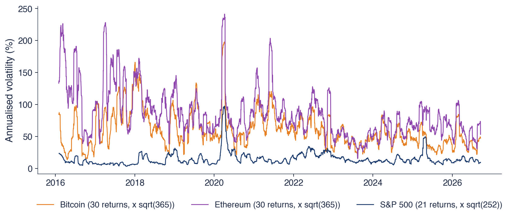

Bucharest University of Economic Studies IDA Institute Digital Assets Blockchain Research Center AI4EFin Artificial Intelligence for Energy Finance Romanian Academy, Institute for Economic Forecasting MSCA Digital Finance
A purely peer-to-peer version of electronic cash would allow online payments to be sent directly from one party to another without going through a financial institution.
Chapters 2–10 built the statistical tools of the course on equities, indices and exchange rates: return distributions, heavy tails, GARCH (generalised autoregressive conditional heteroskedasticity) models, efficiency tests and the risk measures VaR (value at risk) and ES (expected shortfall). This chapter applies them to a market with three particular features: it trades 365 days a year, its assets have no cash flows, and they can lose 80% of their value. The question is whether the tools work here and what they find.
On daily data up to 18 September 2026, the annual volatility of Bitcoin is 66.6%, 3.8 times that of the S&P 500 (17.6%). The stylised facts of Chapter 2 hold in a stronger form: negative skewness, large excess kurtosis and volatility clustering so persistent that the estimated GARCH model sits at the integrated boundary. Robust variance-ratio tests, however, do not reject weak-form efficiency, and the correlation with the S&P 500, close to zero before 2020, has risen to 0.39 since then.
The chapter also covers two topics specific to the crypto market. Stablecoins are crypto assets that try to keep a fixed price of 1 USD, and the episodes of March 2023 (USDC) and May 2022 (TerraUSD) show the two ways in which a peg can break. Spot Bitcoin ETFs, approved in January 2024, raise the question of whether the asset's listing on the stock exchange changed its statistical behaviour.

Annualised volatility over roughly one month, since 2016: Bitcoin (orange) and Ethereum (purple), from 30 daily returns multiplied by \(\sqrt{365}\), and the S&P 500 (dark blue), from 21 returns multiplied by \(\sqrt{252}\).
What you will be able to do
Explain how a blockchain records ownership, why mining costs energy and how the Bitcoin supply follows from the halving rule.
Annualise crypto returns and volatilities with the actual frequency (365 days) and explain what goes wrong with 252 days.
Estimate the tail index, a GARCH(1,1)-t model and variance-ratio tests for Bitcoin and compare them with the S&P 500.
Measure the correlation of crypto with equities and gold over time, and the drawdowns of a crypto asset.
Describe the three types of stablecoins, measure a peg deviation in basis points and interpret a depeg episode.
Compute VaR 1% and ES 2.5% of a crypto position and backtest them.
Chapter plan
Bitcoin and Ethereum in BriefThe blockchain, proof of work, the halving and the 21 million supply, Ethereum and proof of stake, the price data.
Crypto as an Asset ClassAnnualisation with 365 days, five assets side by side, volatility through time and the weekend effect.
Tails and Volatility ClusteringThe Hill estimator, the ACF and the Ljung–Box test, GARCH(1,1)-t and GJR for Bitcoin, Ethereum, the S&P 500 and gold.
Is the Crypto Market Efficient?Variance-ratio tests on the whole sample and on rolling windows, the literature on Bitcoin efficiency and two case studies.
Correlation with Equities and GoldCorrelation across different calendars, rolling and yearly correlation, three crises and the safe-haven test.
Bubbles and CrashesDrawdown, the large falls of Bitcoin and the log-periodic power law.
Spot Bitcoin ETFsVolatility and the weekend share before and after January 2024, and the tracking error of an ETF.
StablecoinsTypes, peg arbitrage, supply, peg deviations, USDC in March 2023, the collapse of TerraUSD and regulation.
AI for Scientific DiscoveryAn open question about stablecoin flows and crypto prices, how AI could help and the checks it needs.
SummaryMain ideas, formulas and self-check questions.
Bitcoin and Ethereum in Brief
The section describes the mechanism behind the two main crypto assets as far as the statistical analysis needs it: how a blockchain keeps track of ownership, what makes it secure, where the Bitcoin supply rule comes from and what Ethereum changes. It ends with the data: how a daily price series is formed for a market without a central exchange.
On 31 October 2008, an author signing as "Satoshi Nakamoto" published a nine-page paper that proposed a peer-to-peer electronic cash system (Nakamoto, 2008). Peer-to-peer means that users pay each other directly, without a bank in between. The problem the paper solves is double spending: a digital coin is a file that can be copied, and without an authority keeping the records nothing prevents paying twice with the same coin.
The first block of the network was created on 3 January 2009, and the first exchange trades took place in 2010. An exchange is a trading platform where crypto assets are bought and sold against dollars or against other crypto assets. In the language of the chapter, a crypto asset is a digital asset whose ownership is recorded on a blockchain.
The author's identity is still unknown, and the coins he obtained by mining in 2009–2010 have never been moved. In fifteen years, an idea from a technical paper became a market with its own prices, exchanges, derivatives and, since 2024, exchange-traded funds; the rest of the chapter studies this market with the statistical tools of the course.
A ledger is the list of all transactions: whoever keeps it knows who owns what. Banks keep private ledgers, each for its own clients. Bitcoin keeps a single public ledger, copied on thousands of computers called nodes, so that no institution controls it alone.
Transactions are grouped into blocks. Each block has a hash, a short fingerprint computed with the SHA-256 (Secure Hash Algorithm, 256 bits) function; changing a single character in the block changes its hash completely. Each block contains the hash of the previous block, so the blocks form a chain. As a consequence, rewriting an old transaction changes the hash of its block and, through it, all later blocks, which would also have to be rewritten.
Who has the right to add the next block, and at what cost, is decided by the consensus rule, the subject of the next frame. Ownership of a coin is given by the private key of the address where the coin sits: whoever holds the key can spend the coin, and a lost key means a coin lost for good.
In brief
Ledger: the list of all transactions; whoever holds the ledger knows who owns what
banks keep private ledgers; Bitcoin keeps one public ledger, copied on thousands of computers (nodes)
Block: a batch of transactions; hash: a short fingerprint of a block (the function SHA-256)
changing one character of a block changes its hash completely
each block contains the hash of the previous one: the blocks form a chain
Consequence: rewriting an old transaction means rewriting every later block
who may add the next block, and at what cost, is decided by the consensus rule (next slide)
Ownership: a coin belongs to whoever holds the private key of its address; a lost key is a lost coin
Bitcoin's consensus rule is proof of work (PoW): to add a block, a miner must find a number that, added to the block, makes its hash smaller than a target. The hash function cannot be inverted, so the only method is repeated trial, with billions of hashes per second on specialised machines. The target is adjusted every 2016 blocks so that a new block appears on average about every 10 minutes, however much computing power enters the network.
The miner who finds the solution receives the block subsidy, that is newly created coins, plus the fees of the transactions in the block. Security comes from cost: to rewrite history, an attacker would have to redo the work of all later blocks faster than the rest of the network, so he would need more computing power than all honest miners together.
The cost of this security is the electricity consumed by the mining machines, as in the farm in the frame's photograph. This is why Bitcoin is criticised for its energy use, and why Ethereum later chose a different consensus rule.
In brief
Proof of work (PoW): to add a block, a miner must find a number that makes the hash of the block smaller than a target
the only method is trial and error: billions of hashes per second, on specialised machines
the target is adjusted every 2016 blocks so that a block arrives about every 10 minutes
The winner receives the block subsidy (new coins) plus the fees of the transactions
to rewrite history, an attacker would need more computing power than all honest miners together
The cost of security is electricity: this is why Bitcoin is criticised for its energy use
The block subsidy was 50 BTC in 2009 and is halved every 210,000 blocks, roughly every four years: 25 BTC in 2012, 12.5 in 2016, 6.25 in 2020 and 3.125 BTC per block since April 2024. This event is called the halving. The total supply is the sum of a geometric series:
The series converges fast: at the beginning of 2024 there were about 19.4 million BTC, and in 2030 there will be 20.4 million, so almost all coins already exist. The Bitcoin supply is fixed by the protocol, not by a central bank, and this programmed scarcity is one of the arguments behind the demand for Bitcoin.
The halving dates are known years in advance. In an efficient market (Chapter 7), a predictable cut in new supply should already be in the price, so the halving itself should not produce an abnormal return. The next frame confronts this prediction with the data.
In brief
Block subsidy: 50 BTC from 2009, halved every 210 000 blocks (about four years)
2012: 25; 2016: 12.5; 2020: 6.25; April 2024: 3.125 BTC per block
the event of halving the subsidy is called the halving
Question for the room ▶ shortens the horizon to 180 days (extra run). How much higher was the price 180 days after the April 2024 halving?
Answer
By 3.7%, against 31% after one year. For the 2016 and 2020 halvings the 180-day changes are 56% and 72%. The change after a date known in advance depends strongly on the horizon chosen, and three observations allow no conclusion: in an efficient market, an announced cut in supply is already in the price.
The chart has two panels. The left panel shows the daily Bitcoin close in USD, on a logarithmic scale, from September 2014 to September 2026; the vertical dashed lines mark the halvings of 2016, 2020 and 2024. The price rose from 457 USD in September 2014 to 80,901 USD on 18 September 2026. The logarithmic scale makes percentage changes from very different levels comparable: a rise from 1,000 to 10,000 USD takes the same height as one from 10,000 to 100,000 USD.
The right panel shows the Bitcoin supply implied by the protocol rule, in million BTC, from 2009 to 2040, together with the 21 million limit of (14.1). The curve rises quickly in the first years and flattens after each halving, approaching the limit asymptotically.
One year after the three halvings, the price was higher by 287%, 559% and 31%, respectively. The figures seem to support a halving effect, but three observations are not statistical evidence: each year also contains other events, and the effect shrinks from one halving to the next. With one event every four years, a credible test will not be possible for a long time.
In brief
Left: Bitcoin close in USD (log scale), 457 USD in September 2014 and 80 901 USD on 18 September 2026; dashed: the halvings of 2016, 2020 and 2024. Right: supply from the protocol rule
Interpretation: one year after the halvings the price was 287%, 559% and 31% higher; three observations are not evidence, and the effect shrinks
Nobody knows who "Satoshi Nakamoto" is: the founder stopped writing in 2011. Bitcoin's rules change only if the majority of nodes accept the new software, so there is no person or company that decides the network's policy.
For a statistician, the main consequence is the absence of cash flows. Bitcoin has no company behind it, earns no profit and pays no dividends, so there is no cash flow to discount as in an equity valuation model. The price reflects demand only, which comes from payments, from speculation and from trust in the coin's scarcity; Baur, Hong & Lee (2018) show that Bitcoin is used mainly as a speculative asset and less as a medium of exchange.
The usual valuation models do not apply, so the price is studied as a statistical object: the distribution of returns, the dynamics of volatility, the dependence on other markets. Trading goes on around the clock, on hundreds of exchanges, 365 days a year, which changes the calendar of the data and, as the next section shows, the way returns are annualised.
In brief
Nobody knows who “Satoshi Nakamoto” is; the founder stopped writing in 2011
the rules of Bitcoin are changed only if most nodes accept the new software
Consequences for a statistician
no company, no profits, no dividends: no cash flows to discount
the price reflects only demand: payments, speculation, belief in scarcity Baur, Hong & Lee (2018)
so the usual valuation models do not apply; we study the price as a statistical object
Trades happen around the clock on hundreds of exchanges, 365 days a year
In 2014, Buterin (2014) proposed Ethereum, a blockchain that does not only record transfers but runs programs; the network was launched in July 2015. A smart contract is a program stored on the blockchain that executes a transaction when its conditions are met. Tokens, stablecoins and DeFi (decentralised finance), that is lending and trading without intermediaries, have been built on this basis.
Since 2022 Ethereum has used a different consensus rule, proof of stake (PoS). The right to add a block is drawn by lot in proportion to the coins locked as collateral (the stake), and fraud is punished by the loss of the collateral. Security no longer comes from electricity consumed but from capital at stake, so there is no longer a race for computing power.
The switch took place on 15 September 2022, in an event called "the Merge", and the network's energy use fell by more than 99.9%. For the statistical analysis, Ethereum is the second most important crypto asset and appears next to Bitcoin in most tables of the chapter.
In brief
2014: Buterin (2014) proposes Ethereum, a blockchain that runs programs; launched in July 2015
smart contract: a program stored on the blockchain that executes a transaction when its conditions are met
on top of it: tokens, stablecoins and DeFi (decentralised finance: lending and trading without intermediaries)
Proof of stake (PoS): the right to add a block is drawn in proportion to the coins locked as a deposit (stake)
cheating is punished by losing the stake; no race of computing power
15 September 2022 (“the Merge”): Ethereum moves from PoW to PoS; energy use falls by more than 99.9% ethereum.org: The Merge
In the crypto market there is no single exchange: each platform has its own price, and prices can differ across countries (Makarov & Schoar, 2020). A data vendor aggregates the platforms into a daily series. The chapter uses EODHD (EOD Historical Data) data, with the close at midnight UTC (Coordinated Universal Time).
The market trades seven days a week, without weekend gaps and without holidays. For the same calendar period, the series therefore have different lengths: Bitcoin has 4,384 daily returns since 2014, while the S&P 500 has 3,017 over the same period. Returns are computed as \(r_t = 100(\ln P_t - \ln P_{t-1})\), in percent, each series on its own calendar.
For the market as a whole there are indices with several coins, for instance the CRIX (CRypto IndeX) of Trimborn & Härdle (2018). CRIX chooses the number of included coins with the AIC (Akaike information criterion, Chapter 6), and the result is that a few coins describe the whole market. The chapter's analysis therefore focuses on Bitcoin and Ethereum, with Solana as the third crypto asset in the descriptive comparisons.
In brief
There is no single exchange: each platform has its own price; prices differ across countries Makarov & Schoar (2020)
a data provider aggregates the platforms into one daily series; here: EODHD, close at midnight UTC (Coordinated Universal Time)
Seven trading days a week: no weekend gaps, no holidays
Bitcoin: 4 384 daily returns since 2014; the S&P 500: 3 017 returns in the same period
Bitcoin is a public ledger secured by proof of work, with a fixed supply of 21 million coins, and Ethereum adds smart contracts and, since 2022, proof of stake. Crypto assets have no cash flows, trade around the clock on many platforms, and their daily series follow a different calendar from equities; these features drive the statistical choices in the rest of the chapter.
Crypto as an Asset Class
The section compares crypto assets with equities and gold through the statistics of the earlier chapters. It starts with annualisation, where the 365-day calendar changes the result, continues with a table of the five assets and with volatility through time, and ends with the question of whether the weekend is different in a market that never closes.
where \(\bar r\) is the mean daily return, \(s\) the standard deviation of daily returns and \(A\) the number of returns per year. The annual log return is the sum of the \(A\) daily returns; their means add up, and under independence so do their variances, hence the factor \(\sqrt{A}\) for the standard deviation.
The correct value of \(A\) is the actual number of observations per year, not a conventional constant. For equities, \(A \approx 252\) trading days; for crypto assets, which trade every day, \(A = 365\). In the chapter's data, the actual frequency is 365.3 returns per year for Bitcoin and 251.4 for the S&P 500.
In brief
With \(A\) observations a year and i.i.d. daily returns (Chapter 1):
The worked example uses Bitcoin daily returns, with mean 0.1181% and standard deviation 3.485%. With the correct frequency, the annual volatility is \(\sqrt{365} \times 3.485 = 19.10 \times 3.485 = 66.6\%\), and the annual mean \(365 \times 0.1181 = 43.1\%\). The equity rule gives \(\sqrt{252} \times 3.485 = 55.3\%\) and \(252 \times 0.1181 = 29.8\%\).
The 252 rule therefore understates volatility by 16.9% and the mean by 31.0%. The Sharpe ratio, which divides the mean by the volatility, is also affected, and mixing the two conventions (the mean multiplied by 252, the volatility by \(\sqrt{365}\)) distorts it further. The error has nothing to do with the data, only with the calendar, and it is easy to make when a program written for equities is applied unchanged to a crypto series.
The practical rule is that each series is annualised with its own \(A\), never with a common one. A comparison between Bitcoin and the S&P 500 therefore uses 365 for the first and 252 for the second, as in all tables of this chapter.
In brief
Worked example: Bitcoin, \(\bar r = 0.1181\%\), \(s = 3.485\%\) per day
The table summarises the daily log returns of the five assets up to 18 September 2026: Bitcoin since 2014, Ethereum since 2016, Solana since 2020, the S&P 500 since 2014 and gold (the XAU/USD rate) since 2014. The annual volatility is computed with (14.2) and with each series' actual frequency. Skewness is the mean of \(((r_t - \bar r)/s)^3\), and excess kurtosis the mean of \(((r_t - \bar r)/s)^4\) minus 3; both are 0 for the Normal distribution.
The difference in level is large. Bitcoin is 3.8 times as volatile as the S&P 500 (66.6% against 17.6% per year), Ethereum 5.4 times (95.3%) and Solana 6.7 times (117.1%). Gold, at 16.4%, is close to the S&P 500. Bitcoin moves by more than 5% in a day on 11.6% of days, and the worst day of the sample was 12 March 2020, with a log return of −46.5%.
The shape of the distributions, however, is shared. All five assets have negative skewness and positive excess kurtosis: the excess is 12.0 for Bitcoin, 15.8 for the S&P 500 and 9.5 for gold. The stylised facts of Chapter 2 therefore hold in the crypto market too, at a much larger volatility scale.
In brief
since
\(n\)
mean (%)
sd (%)
ann. vol. (%)
skew.
exc. kurt.
min (%)
Bitcoin
2014
4 384
\(0.118\)
\(3.49\)
\(66.6\)
\(-0.70\)
\(12.0\)
\(-46.5\)
Ethereum
2016
3 913
\(0.202\)
\(4.99\)
\(95.3\)
\(-0.20\)
\(9.0\)
\(-55.1\)
Solana
2020
2 351
\(0.212\)
\(6.12\)
\(117.1\)
\(-0.22\)
\(7.9\)
\(-55.0\)
S&P 500
2014
3 017
\(0.044\)
\(1.11\)
\(17.6\)
\(-0.64\)
\(15.8\)
\(-12.8\)
Gold
2014
3 124
\(0.041\)
\(1.01\)
\(16.4\)
\(-0.41\)
\(9.5\)
\(-11.1\)
Daily log returns until 18 September 2026; annual volatility \(= \sqrt{A}\,s\) with the actual frequency \(A\) of each series; gold: XAU/USD
skewness: the mean of \(((r_t - \bar r)/s)^3\); excess kurtosis: the mean of \(((r_t - \bar r)/s)^4\) minus 3 (both 0 for the Normal distribution)
Interpretation
Bitcoin is 3.8 times as volatile as the S&P 500 (66.6% against 17.6%); Ethereum 5.4 times, Solana 6.7 times
on 11.6% of the days Bitcoin moves by more than 5%; the worst day: \(-46.5\%\) on 12 March 2020
all five have negative skewness and excess kurtosis: the stylised facts of Chapter 2 hold, in a stronger form
Question for the room By how much does the 252 rule understate Bitcoin’s annual volatility, compared with A = 365?
Answer
By 16.9% = 1 − √(252/365): 55.3% instead of 66.6%. The mean is understated more, by 31.0% = 1 − 252/365 (29.8% instead of 43.1%), because the mean scales with A and the volatility only with √A.
Statistics of the daily log returns (the table of the slide)
Question for the room ▶ starts all series on 1 January 2024 (extra run). How many times as volatile as the S&P 500 is Bitcoin?
Answer
3.1 times (47.5% against 15.2%), against 3.8 times on the whole sample; Ethereum 4.5 times, Solana 5.2 times. Bitcoin’s volatility has fallen, but the ratio stays large.
Question for the room With a 7-day window (▶, extra run), on what share of the days is Bitcoin’s volatility below that of the S&P 500?
Answer
On 3.8% of the common days, against 0.11% with the 30-day window. On 7 returns the estimates are much noisier, so the two curves cross more often, although the median ratio stays 3.9.
The chart shows annualised volatility over roughly one month, from 2016 to 2026. For Bitcoin (orange) and Ethereum (purple), each point is the standard deviation of the last 30 daily returns multiplied by \(\sqrt{365}\); for the S&P 500 (dark blue), of the last 21 returns multiplied by \(\sqrt{252}\). The windows thus cover about the same calendar month.
The medians are 54% for Bitcoin, 77% for Ethereum and 12% for the S&P 500, and the median ratio of Bitcoin to S&P 500 volatility is 3.8. All three series peak in March–April 2020, at the start of the COVID-19 (coronavirus disease 2019) pandemic, when the volatility of the S&P 500 also rises to the usual level of the crypto assets.
Bitcoin volatility declines over time: the peaks are rarer and lower after 2023 than in 2016–2018. Even so, Bitcoin volatility was below that of the S&P 500 on only 0.1% of days. The fall in level has not changed the ranking of the two markets.
In brief
Volatility on about one month: 30 daily returns \(\times\sqrt{365}\) for crypto, 21 returns \(\times\sqrt{252}\) for the S&P 500
Interpretation: medians 54% (Bitcoin), 77% (Ethereum), 12% (S&P 500); the median ratio Bitcoin/S&P 500 is 3.8; all three peak in March–April 2020
Bitcoin's volatility trends down, but it was below that of the S&P 500 on only 0.1% of the days
Liu & Tsyvinski (2021) study the daily and weekly returns of Bitcoin, Ripple and Ethereum between 2011 and 2018. Their method is to regress crypto returns on stock market factors, on exchange rates, on commodities and on macroeconomic factors, that is on the variables that explain the returns of traditional assets.
The main result is that crypto returns have almost no exposure to these factors, so they form a separate asset class. They do, however, have strong time-series momentum: large returns in one week predict large returns in the following weeks. Investor attention, measured by Google searches and Twitter posts, also predicts returns.
Liu, Tsyvinski & Wu (2022) extend the analysis to the cross-section and show that three crypto factors, market, size and momentum, explain the returns of different coins. Both studies, however, use data from before 2020, and the link with equities changed after that year (Section 5): the conclusion of independence from traditional markets depends on the sample period.
In brief
Liu & Tsyvinski (2021): Bitcoin, Ripple and Ethereum, daily and weekly returns, 2011–2018
design: regress crypto returns on stock-market factors, currencies, commodities and macroeconomic factors
Findings
crypto returns have almost no exposure to the usual factors: a separate asset class
strong time-series momentum: high returns this week predict high returns in the next weeks
Stock exchanges close at weekends, crypto markets do not. Still, at weekends banks are closed, institutional investors are less active and the news flow slows down. The day-of-the-week effect means a different mean or variance of returns on certain days; Caporale & Plastun (2019) study it in the crypto market.
The chapter runs two tests on Bitcoin, with each day labelled by the date of its close. For the mean, it estimates the regression \(r_t = a + b\,W_t + \varepsilon_t\), where \(W_t = 1\) on Saturdays and Sundays and 0 otherwise. The coefficient \(a\) is the mean return on weekdays and \(b\) the weekend-minus-weekday difference; \(b = 0\) means no weekend effect in the mean. The standard errors are HAC (heteroskedasticity and autocorrelation consistent), of the Newey–West type, because the residuals show volatility clustering.
For the variance, it uses the Brown–Forsythe test, that is the Levene test computed around the median, which is robust to heavy tails. The matching descriptive statistic is the ratio of weekend variance to weekday variance, equal to 1 if every day carried the same risk.
In brief
Stock markets close at weekends; crypto markets do not, but banks, institutional traders and news slow down
weekday effect: different mean or variance of returns on some days of the week Caporale & Plastun (2019)
Two tests on Bitcoin, each day labelled by its closing date
mean: \(r_t = a + b\,W_t + \varepsilon_t\), \(W_t = 1\) on Saturday and Sunday, 0 otherwise; HAC (Newey–West) standard errors
\(a\): the mean return on weekdays; \(b\): the weekend minus weekday difference; \(b = 0\): no weekend effect in the mean
variance: the Brown–Forsythe test (Levene's test around the median), robust to heavy tails
Ratio of the weekend to the weekday variance: equal to 1 if every day had the same risk
Question for the room ▶ adds one year at a time. In which year is Bitcoin’s ratio of the weekend to the weekday variance lowest?
Answer
In 2022: 0.30 (Brown–Forsythe p < 0.001), then 2023 (0.31) and 2024 and 2026 (0.32). Before 2020 the ratio was closer to 1: 0.66 in 2015 and 0.89 in 2016. The weekend mean is not significantly different from the weekday mean in any year.
The chart shows the standard deviation of Bitcoin's daily returns, in percent, for each day of the week (Monday to Sunday), by the day of the close, in three periods: 2014–2019 (dark blue), 2020–2023 (orange) and 2024–2026 (red). The Saturday and Sunday bars are the lowest in the last two periods; Saturday in 2024–2026 has the smallest standard deviation in the chart.
In the mean, the weekend does not differ: the coefficient \(b\) is −0.01 (p-value 0.95), −0.11 (0.48) and −0.03 (0.83) in the three periods. In the variance, the difference is clear. The ratio of weekend to weekday variance is 0.66, 0.35 and 0.39, and the Brown–Forsythe test rejects equal variances in all three periods (p-value 0.002 in the first, below 0.001 in the others).
The crypto market is therefore calmer when traditional markets are closed, and the difference has grown since 2020. The result suggests that a large part of the variation in the Bitcoin price comes from flows and news linked to the traditional financial system, not only from the crypto market itself.
In brief
Standard deviation of daily returns by closing day; three periods
Weekend dummy \(b\) (p-value): \(-0.01\) (0.95), \(-0.11\) (0.48), \(-0.03\) (0.83): no weekend effect in the mean
Interpretation: weekend/weekday variance 0.66, 0.35, 0.39 (Brown–Forsythe p 0.002, \(<\) 0.001, \(<\) 0.001): crypto is calmer when traditional markets close
Crypto assets are 3.8 to 6.7 times as volatile as the S&P 500, with the same stylised facts: negative skewness and excess kurtosis. Annualisation must use 365 days, otherwise Bitcoin volatility is understated by 16.9%. The weekend does not differ in the mean, but weekend variance is much lower, especially since 2020.
Tails and Volatility Clustering
The section measures the tails of the distributions with the Hill estimator, tests the dependence of returns and of their squares with the ACF and the Ljung–Box test, and estimates GARCH(1,1)-t and GJR models for two crypto assets and two traditional assets.
A distribution has power-law heavy tails if \(P(X > x) \approx c\,x^{-\alpha}\) for large \(x\), where \(c\) is a constant and \(\alpha\) is the tail index. A smaller \(\alpha\) means a heavier tail. Moments of order \(\ge \alpha\) are infinite: \(\alpha < 4\) means infinite kurtosis, and \(\alpha < 2\) infinite variance.
The estimator of Hill (1975), introduced in Chapter 5, uses the \(k\) largest losses (or gains):
Here \(X_{(1)} \ge X_{(2)} \ge \dots\) are the losses (or gains) sorted in decreasing order, \(X_{(k+1)}\) is the tail threshold, and CI is the confidence interval. For a power law, the logarithm of the ratio between an extreme value and the threshold has mean \(1/\alpha\), which is why the estimator is the inverse of this mean. The chapter uses \(k = 2.5\%\) of the number of observations \(n\).
In brief
Hill (1975) (Chapter 5): the tail index from the \(k\) largest losses (or gains)
The table gives the tail index of the left tail (losses) and of the right tail (gains) for the five assets, with 95% confidence intervals. For Bitcoin, the left tail has \(\hat\alpha = 2.71\), with interval \([2.20; 3.21]\), and the right tail \(\hat\alpha = 3.37\), with interval \([2.74; 4.00]\): extreme losses are heavier than extreme gains, in line with the negative skewness.
All left-tail indices are below 4: 2.62 for Ethereum, 2.84 for Solana, 2.68 for the S&P 500 and 3.11 for gold. If the population kurtosis is infinite, the sample kurtosis in the five-asset table does not estimate a stable value: it grows with the sample and depends on a few extreme days. Excess kurtosis values of 12.0 or 15.8 therefore describe the sample, not a parameter.
The intervals for crypto and for equities overlap. The large difference between Bitcoin and the S&P 500 is therefore in the level of volatility, not in the shape of the tail: after rescaling, the extreme losses of the two markets have comparable heaviness.
In brief
left tail \(\hat\alpha\)
95% CI
right tail \(\hat\alpha\)
95% CI
Bitcoin
\(2.71\)
\([2.20, 3.21]\)
\(3.37\)
\([2.74, 4.00]\)
Ethereum
\(2.62\)
\([2.10, 3.15]\)
\(3.09\)
\([2.48, 3.71]\)
Solana
\(2.84\)
\([2.11, 3.57]\)
\(3.41\)
\([2.54, 4.29]\)
S&P 500
\(2.68\)
\([2.08, 3.29]\)
\(2.80\)
\([2.17, 3.43]\)
Gold
\(3.11\)
\([2.42, 3.80]\)
\(3.04\)
\([2.36, 3.71]\)
Interpretation
Bitcoin's left tail (\(\hat\alpha = 2.71\)) is heavier than its right tail
all left-tail indices are below 4: the sample kurtosis of the table of five assets is not a stable number
The autocorrelation function (ACF) \(\hat\rho(k)\) is the sample correlation between \(r_t\) and \(r_{t-k}\), where \(k\) is the lag in days. Under independence, \(\hat\rho(k)\) lies within \(\pm 1.96/\sqrt{n}\) with probability 95%, where \(n\) is the number of returns. The ACF of \(r_t\) asks whether the direction of the move is predictable; the ACF of \(r_t^2\) asks whether the size of the move is predictable, that is whether there is volatility clustering.
The Ljung–Box test combines the first 10 autocorrelations into a single statistic:
Without autocorrelation, \(Q(10)\) follows a \(\chi^2\) distribution with 10 degrees of freedom. A large \(Q(10)\) with a small p-value shows that the autocorrelations are jointly significant, even if each one is small. The test, however, assumes constant variance; with volatility clustering it rejects too often, a point the chapter returns to in Section 4.
In brief
ACF (autocorrelation function): \(\hat\rho(k)\), the sample correlation between \(r_t\) and \(r_{t-k}\); \(k\): the lag in days
under independence, \(\hat\rho(k)\) lies within \(\pm 1.96/\sqrt{n}\) with probability 95% (\(n\): the number of returns)
ACF of \(r_t\): is the direction predictable? ACF of \(r_t^2\): is the size of the move predictable (volatility clustering)?
Ljung–Box test of the first 10 autocorrelations together:
Question for the room With k = 10% of n (▶, extra run), what happens to Bitcoin’s left-tail α̂?
Answer
It falls to 1.83 (k = 438), from 2.71 with k = 2.5%; with k = 1% it rises to 3.83. A large k takes in observations from the centre of the distribution, where the power law does not hold, and the estimate falls; k = 2.5% of n is a choice, not a result.
Question for the room For Bitcoin’s returns rₜ, from which m is Q(m) significant at 5% for the first time (▶, m = 1 … 30)?
Answer
From m = 10: Q(10) = 20.2 against the critical value 18.3. At m = 12 it is not (20.6 < 21.0), nor at m = 30 (43.5 < 43.8). The autocorrelations of the returns are small, so the verdict depends on the number of lags; for rₜ² Q(m) exceeds the critical value at every m.
Question for the room ▶ goes through the five series. Which has the largest first-order autocorrelation of the squared returns?
Answer
The S&P 500: ρ̂(1) = 0.451, then Solana 0.247, Ethereum 0.175, Bitcoin 0.137 and gold 0.090. Volatility clustering is not about the level of volatility: equities have a lower volatility, but one that is more persistent from one day to the next.
The chart has two panels with the ACF for lags 1–30: on the left the ACF of Bitcoin returns \(r_t\), on the right the ACF of the squares \(r_t^2\). The dashed lines mark the band \(\pm 1.96/\sqrt{n} = \pm 0.030\).
For returns, \(\hat\rho(1) = -0.022\), and only 4 of 30 lags leave the band, with small values. For squares, \(\hat\rho(1) = 0.137\), and 15 of 30 lags leave the band, all positive. The Ljung–Box statistic \(Q(10)\) is 20.2 for \(r_t\) (p-value 0.028) and 212.7 for \(r_t^2\) (p-value below 0.001).
The difference in order of magnitude between the two statistics sums up the result: the direction of the move is hard to forecast, its size is not. Turbulent days follow turbulent days, exactly the stylised fact of Chapter 8, and the model that describes it is GARCH.
In brief
ACF of \(r_t\) and of \(r_t^2\), lags 1–30; dashed: \(\pm 1.96/\sqrt{n} = \pm 0.030\)
Returns: \(\hat\rho(1) = -0.022\), 4 of 30 lags outside the band; squared returns: \(\hat\rho(1) = 0.137\), 15 of 30 outside
Interpretation: Ljung–Box \(Q(10)\) is 20.2 for \(r_t\) (p 0.028) and 212.7 for \(r_t^2\) (p \(<\) 0.001): the direction is hard to predict, the size of the move is not
Here \(\sigma_t^2\) is the conditional variance of day \(t\),\(\varepsilon_t\) the shock (the demeaned return), and \(z_t\) follows a Student-t distribution with \(\nu\) degrees of freedom, scaled to variance 1. The parameter \(\omega > 0\) is the constant, \(\alpha \ge 0\) the reaction to shocks, \(\beta \ge 0\) the memory of past variance and \(\alpha + \beta\) the persistence. A shock to the variance dies out geometrically at rate \(\alpha + \beta\), and the half-life, \(\ln 0.5/\ln(\alpha + \beta)\) days, is the time after which half of its effect has gone.
The GJR (Glosten–Jagannathan–Runkle) variant adds the term \(\gamma\,\varepsilon_{t-1}^2\mathbb{1}\{\varepsilon_{t-1} < 0\}\), where the indicator is 1 after a fall. A \(\gamma > 0\) means that falls raise volatility more than rises of the same size, the leverage effect known from equities.
In brief
Bollerslev (1986) (Chapter 9): today's variance is a weighted sum of a constant, yesterday's squared shock and yesterday's variance
\(\sigma_t^2\): the conditional variance of day \(t\); \(\varepsilon_t\): the shock (the demeaned return); \(z_t\): Student-t with \(\nu\) degrees of freedom, scaled to variance 1
\(\omega > 0\): the constant; \(\alpha \ge 0\): the reaction to news; \(\beta \ge 0\): the memory of past variance; \(\alpha + \beta\): the persistence
half-life of a shock: \(\ln 0.5/\ln(\alpha + \beta)\) days, the time in which half of its effect on the variance is gone
GJR: an extra term \(\gamma\,\varepsilon_{t-1}^2\mathbb{1}\{\varepsilon_{t-1} < 0\}\)
\(\mathbb{1}\{\varepsilon_{t-1} < 0\} = 1\) after a fall; \(\gamma > 0\): falls raise volatility more than rises, the leverage effect of equities
GARCH(1,1)-t for Crypto and Traditional Assets (2/2)
The table gives the maximum likelihood estimates on the daily log returns of Bitcoin, Ethereum, the S&P 500 and gold. For Bitcoin, \(\hat\alpha = 0.109\) and \(\hat\beta = 0.891\); for Ethereum, \(\hat\alpha = 0.175\) and \(\hat\beta = 0.825\). For both crypto assets the persistence \(\hat\alpha + \hat\beta\) is 1.000, so the half-life is not defined.
For the traditional assets the persistence is high but below 1: 0.993 for the S&P 500, with a half-life of 100 days, and 0.994 for gold, with 113 days. The degrees of freedom of the Student-t distribution are 3.18 for Bitcoin, 3.14 for Ethereum, 5.50 for the S&P 500 and 4.13 for gold.
The last column gives the GJR coefficient \(\hat\gamma\) and its \(t\) statistic. It is −0.013 (\(t = -0.72\)) for Bitcoin, 0.032 (\(t = 0.91\)) for Ethereum, 0.280 (\(t = 7.08\)) for the S&P 500 and −0.051 (\(t = -3.33\)) for gold. The next frame interprets these figures.
In brief
\(\hat\omega\)
\(\hat\alpha\)
\(\hat\beta\)
\(\hat\alpha + \hat\beta\)
half-life (days)
\(\hat\nu\)
GJR \(\hat\gamma\) (\(t\))
Bitcoin
\(0.194\)
\(0.109\)
\(0.891\)
\(1.000\)
–
\(3.18\)
\(-0.013\) (\(-0.72\))
Ethereum
\(1.067\)
\(0.175\)
\(0.825\)
\(1.000\)
–
\(3.14\)
\(0.032\) (\(0.91\))
S&P 500
\(0.024\)
\(0.173\)
\(0.820\)
\(0.993\)
100
\(5.50\)
\(0.280\) (\(7.08\))
Gold
\(0.010\)
\(0.047\)
\(0.947\)
\(0.994\)
113
\(4.13\)
\(-0.051\) (\(-3.33\))
Estimates by maximum likelihood on daily log returns; half-life in days; \(t\): the \(t\)-statistic of \(\hat\gamma\)
For crypto assets, \(\hat\alpha + \hat\beta = 1\), at the boundary of the parameter space: the estimated model is an integrated GARCH (IGARCH). The EWMA (exponentially weighted moving average) model of Chapter 8 is the special case \(\omega = 0\). In an IGARCH, a volatility shock does not die out within the sample, and there is no finite long-run variance for volatility to revert to. For the S&P 500 and gold, by contrast, half of the effect of a shock is gone in 100 and 113 days, respectively.
The tails remain very heavy even after GARCH filtering: \(\hat\nu = 3.18\) for Bitcoin means innovations \(z_t\) with infinite kurtosis, against \(\hat\nu = 5.50\) for the S&P 500. Volatility clustering explains part of the heavy tails of returns, but not all of them.
Crypto assets show no leverage effect: \(\hat\gamma = -0.013\)(\(t = -0.72\)) for Bitcoin, against 0.280 (\(t = 7.08\)) for the S&P 500. Gold has a negative and significant \(\hat\gamma\)(\(t = -3.33\)): price rises increase volatility more than falls, the behaviour of a safe-haven asset sought in periods of stress. Katsiampa (2017) compares several GARCH-type models for Bitcoin and finds that the best fit is a model with a short-run and a long-run component of volatility, another form of very high persistence.
In brief
Crypto: \(\hat\alpha + \hat\beta = 1\) at the boundary: an integrated GARCH (IGARCH; the EWMA of Chapter 8 is the case \(\omega = 0\))
a shock to volatility does not die out within the sample; there is no finite long-run variance to which volatility returns
S&P 500 and gold: half-lives of 100 and 113 days
\(\hat\nu \approx 3.18\) for Bitcoin: even after GARCH filtering the tails are very heavy
the S&P 500 has \(\hat\nu = 5.50\)
No leverage effect in crypto: \(\hat\gamma = -0.013\) (\(t = -0.72\)) for Bitcoin, against \(0.280\) (\(t = 7.08\)) for the S&P 500
gold has \(\hat\gamma < 0\) (\(t = -3.33\)): rises in its price raise volatility more than falls, as for a safe haven
Katsiampa (2017) compares GARCH-type models for Bitcoin: a model with a short-run and a long-run volatility component fits best
GARCH(1,1)-t and GJR estimates (the table of the slide) and the share of a shock left
Worked example: the half-life of a shock
\[h_{1/2} = \frac{\ln 0.5}{\ln(\alpha + \beta)}, \qquad \text{share left after } h \text{ days} = (\alpha + \beta)^h\]
Question for the room What share of a volatility shock is still in the S&P 500 variance after 200 days?
Answer
About 25%: 0.9931²⁰⁰ = 0.251, two half-lives of 100 days. For gold 29% is left, for Bitcoin practically 100%, because α̂ + β̂ = 1.
Question for the room ▶ extends the forecast to 365 days. What volatility does the model give for Bitcoin one year ahead?
Answer
About 169%, from 54% for the next day. With α̂ + β̂ = 1 the forecast variance grows by ω̂ = 0.194 every day, with no return to a long-run level. For the S&P 500 the forecast rises from 11.5% to 28.4%, towards the long-run level of 29.4%.
The chart shows the conditional volatility \(\hat\sigma_t\) from the GARCH(1,1)-t model, annualised with \(\sqrt{365}\) for Bitcoin (orange) and with \(\sqrt{252}\) for the S&P 500 (dark blue), from 2014 to 2026, in percent.
Both series peak in March 2020: 301% for Bitcoin and 125% for the S&P 500. On 18 September 2026, the model gives 42% for Bitcoin and 12% for the S&P 500. Between crises, Bitcoin volatility has frequent, short spikes above a base level that declines over time, while the S&P 500 series stays well below it throughout.
Unlike the rolling-window volatility of Section 2, the GARCH estimate reacts from the first day to a large shock and has no artificial jumps when an extreme day drops out of the window. It is the estimate used later for the conditional VaR of Section 9.
In brief
GARCH(1,1)-t volatility \(\hat\sigma_t\), annualised with \(\sqrt{365}\) (Bitcoin) and \(\sqrt{252}\) (S&P 500)
Interpretation: both peak in March 2020 (301% and 125%); on 18 September 2026 the model gives 42% for Bitcoin and 12% for the S&P 500
The left tails of all five assets have a tail index below 4, and the intervals for crypto and for equities overlap. Bitcoin returns are nearly uncorrelated, but their squares are strongly autocorrelated. The GARCH(1,1)-t model of crypto assets is integrated, with very heavy-tailed innovations and no leverage effect, unlike the S&P 500.
Is the Crypto Market Efficient?
The section applies the weak-form efficiency tests of Chapter 7 to Bitcoin and Ethereum, on the whole sample, on subperiods and on rolling windows, compares them with the literature on Bitcoin efficiency and shows, through two case studies, what trading data and blockchain data can reveal beyond a single price series.
In a weak-form efficient market (Fama, 1970), past prices do not help forecast future returns. The other two forms ask for more: the semi-strong form refers to all public information, the strong form to all information, private included. Statistical tests on a price series concern the weak form only.
The chapter uses three tools: the first-order autocorrelation \(\hat\rho(1)\), the Ljung–Box statistic \(Q(10)\) of (14.4) and the variance ratio (VR) of Lo & MacKinlay (1988):
Here \(q\) is the horizon in days, and the numerator is the variance of the \(q\)-day log return. Without autocorrelation, this variance is \(q\) times the daily one, so VR is 1 for a random walk. A VR above 1 indicates momentum (trends), a VR below 1 mean reversion.
The robust test statistic is \(Z^*(q) = (\widehat{\mathrm{VR}}(q) - 1)/\sqrt{\hat\theta^*(q)}\), where \(\hat\theta^*\) is the variance of \(\widehat{\mathrm{VR}}\) robust to volatility clustering. For a random walk, \(Z^*\) is approximately \(N(0,1)\), and the hypothesis is rejected at 5% if \(|Z^*| > 1.96\).
In brief
Fama (1970): in a weak-form efficient market, past prices do not help to predict future returns (Chapter 7)
forms of efficiency: weak (past prices), semi-strong (public information), strong (all information)
Tests used here
first-order autocorrelation \(\hat\rho(1)\) and Ljung–Box \(Q(10)\)
variance ratio Lo & MacKinlay (1988): \(\mathrm{VR}(q) = \mathrm{Var}(r_t + \dots + r_{t-q+1})/(q\,\mathrm{Var}(r_t))\), equal to 1 under a random walk
\(q\): the horizon in days; \(r_t + \dots + r_{t-q+1}\): the \(q\)-day log return; without autocorrelation its variance is \(q\) times the daily one
\(Z^*(q) = (\widehat{\mathrm{VR}}(q) - 1)/\sqrt{\hat\theta^*(q)}\); \(\hat\theta^*\): the variance of \(\widehat{\mathrm{VR}}\), robust to volatility clustering
\(Z^* \approx N(0, 1)\) under a random walk (Chapter 7); reject at 5% if \(|Z^*| > 1.96\)
VR \(> 1\): momentum (trends); VR \(< 1\): mean reversion
The first table gives the results on the whole sample. For Bitcoin, \(\hat\rho(1) = -0.022\),\(Q(10) = 20.2\) (p-value 0.028), VR(2), VR(5) and VR(10) are 0.977, 0.991 and 1.027, and \(Z^*(5) = -0.19\) (p-value 0.853). Ethereum has similar values, with \(Z^*(5) = 1.17\) (p-value 0.241). The S&P 500 has a larger negative autocorrelation, \(\hat\rho(1) = -0.126\), variance ratios below 1 (VR(10) = 0.813) and \(Q(10) = 236.1\), but here too \(Z^*(5) = -1.28\) (p-value 0.201).
The second table splits the samples into subperiods: 2014–2017, 2018–2021 and 2022–2026 for Bitcoin, 2016–2017, 2018–2021 and 2022–2026 for Ethereum. VR(5) stays between 0.975 and 1.127, and no \(Z^*(5)\) exceeds 1.96 in absolute value; the largest is 1.03, for Ethereum in 2016–2017.
No VR test therefore rejects the random walk, in any subperiod. The Ljung–Box test rejects weakly for crypto (p-values 0.028 and 0.012) because it assumes constant variance: volatility clustering inflates the variability of sample autocorrelations, and the band \(\pm 1.96/\sqrt{n}\) becomes too narrow. The robust statistic \(Z^*\) corrects for this.
In brief
\(\hat\rho(1)\)
\(Q(10)\) (p)
VR(2)
VR(5)
VR(10)
\(Z^*(5)\) (p)
Bitcoin
\(-0.022\)
\(20.2\) (0.028)
\(0.977\)
\(0.991\)
\(1.027\)
\(-0.19\) (0.853)
Ethereum
\(-0.012\)
\(22.7\) (0.012)
\(0.988\)
\(1.067\)
\(1.137\)
\(1.17\) (0.241)
S&P 500
\(-0.126\)
\(236.1\) (\(<\) 0.001)
\(0.875\)
\(0.849\)
\(0.813\)
\(-1.28\) (0.201)
period
\(n\)
\(\hat\rho(1)\)
VR(5)
\(Z^*(5)\) (p)
Bitcoin
2014–2017
1 201
\(0.028\)
\(0.975\)
\(-0.23\) (0.815)
Bitcoin
2018–2021
1 460
\(-0.057\)
\(0.981\)
\(-0.25\) (0.801)
Bitcoin
2022–2026
1 721
\(-0.026\)
\(1.013\)
\(0.18\) (0.856)
Ethereum
2016–2017
730
\(0.034\)
\(1.127\)
\(1.03\) (0.303)
Ethereum
2018–2021
1 460
\(-0.064\)
\(0.997\)
\(-0.04\) (0.971)
Ethereum
2022–2026
1 721
\(-0.015\)
\(1.014\)
\(0.20\) (0.844)
Interpretation: no VR test rejects the random walk, in any sub-period; the Ljung–Box test rejects weakly for crypto because it ignores volatility clustering
Question for the room With q = 2 (▶, extra run), does any whole-sample Z* reject the random walk at 5%?
Answer
Yes, for the S&P 500: Z*(2) = −2.30 (p 0.022), because VR(2) = 0.875 ≈ 1 + ρ̂(1) reflects the daily mean reversion of the index. Bitcoin (−0.88) and Ethereum (−0.43) do not reject. The rejection comes from the market seen as the most efficient, not from crypto.
Question for the room With windows of 1,000 observations (▶, extra run), what share of the S&P 500 windows reject with the i.i.d. Z(5)?
Answer
About 50% (50.5%), against 21.7% with windows of 500, and still 0% with the robust Z*. A longer window gives more power to a wrong test: ignoring volatility clustering creates false rejections.
The chart shows the robust statistic \(Z^*(5)\) for Bitcoin (orange), Ethereum (purple) and the S&P 500 (dark blue), computed on windows of 500 observations, with a new window every 21 observations, as in Chapter 7. The horizontal dashed lines mark the critical values \(\pm 1.96\).
All three series stay inside the band over the whole 2016–2026 period: for Bitcoin, 0.0% of the 185 windows reject the random walk. The statistic fluctuates around zero, with no drift towards either boundary.
The contrast comes from the i.i.d. statistic \(Z(5)\), which assumes constant variance. With it, the share of rejecting windows would be 1.6% for Bitcoin and 21.7% for the S&P 500. Ignoring volatility clustering therefore produces false rejections, especially in the equity market, where the negative first-order autocorrelation coincides with periods of high volatility.
In brief
Robust \(Z^*(5)\) on windows of 500 observations, one window every 21 observations (as in Chapter 7)
Interpretation: Bitcoin 0.0% of 185 windows reject; with the i.i.d. statistic \(Z(5)\) the share would be 1.6% for Bitcoin and 21.7% for the S&P 500: ignoring volatility clustering creates false rejections
The literature on Bitcoin efficiency started from a negative verdict. Urquhart (2016) finds that Bitcoin was inefficient over 2010–2016 as a whole, but moved towards efficiency after 2013. Nadarajah & Chu (2017) show that a power transformation of the same returns passes the efficiency tests, so the initial verdict was fragile. Tran & Leirvik (2020) propose an adjusted measure of inefficiency and find that crypto markets became more efficient after 2017.
The chapter's data, which start in 2014, agree with this evolution: VR(5) ranges between 0.78 and 1.17 on the rolling windows, with no robust rejection. The market has grown, arbitrageurs have entered, derivatives and ETFs have appeared. The degree of efficiency changes with the participants, the adaptive-markets view of Chapter 11.
Weak-form efficiency is not efficiency in general, however. Prices can be unpredictable from their history and still far from any fundamental value: a random walk says nothing about the level at which the price stands. The case studies that follow show kinds of inefficiency that a test on a single series cannot see.
In brief
Urquhart (2016): Bitcoin was inefficient in 2010–2016 as a whole, but moved towards efficiency after 2013
Nadarajah & Chu (2017): a power transformation of the same returns passes the tests: the early verdict was fragile
Tran & Leirvik (2020): an adjusted measure of inefficiency; crypto markets became more efficient after 2017
Our data (since 2014): VR(5) between 0.78 and 1.17 on rolling windows; no robust rejection
the market grew, arbitrageurs arrived, derivatives and ETFs appeared: the adaptive-markets view of Chapter 11
Weak-form efficiency is not efficiency in general: prices can be unpredictable and still be far from any fundamental value
Case Study: Trading and Arbitrage Across Exchanges
Makarov & Schoar (2020) use tick-by-tick data from 34 exchanges in 19 countries over 2017–2018. Their question concerns arbitrage: buying where the price is low and selling where it is high. In an efficient market such differences close quickly, because arbitrageurs exploit them.
The authors find large and persistent price differences across countries, especially between Korea, Japan and the United States, and much smaller ones within the same country. The differences open up when Bitcoin rises, and capital controls make arbitrage difficult. At the same time, a common component explains most of the order flow: prices are set in a global market, even if their level differs across countries.
The lesson is that the law of one price fails where money does not move freely. A statistical test applied to a single aggregated series cannot see this inefficiency, which appears only when markets are compared.
Griffin & Shams (2020) use the blockchain records of Bitcoin and of the stablecoin Tether (USDT) over 2017–2018. Their question is whether newly issued USDT was used to buy Bitcoin after price falls, that is to support the price.
The results show that purchases made with Tether came after market falls and were followed by price increases. The flows came mainly from a single large account on a single exchange, Bitfinex, and the hours with such flows explain a large part of the rise in the Bitcoin price in 2017.
A similar result is the manipulation on the Mt. Gox exchange in 2013, documented by Gandal et al. (2018). Both studies use a feature specific to the crypto market: transactions are public on the blockchain, which allows tests that are impossible in equity markets, where the identity of buyers is not visible.
In brief
Griffin & Shams (2020): blockchain records of Bitcoin and of the stablecoin Tether (USDT), 2017–2018
question: was new USDT used to buy Bitcoin after price falls?
Findings
purchases with Tether came after market falls and were followed by price rises
the flows came mostly from one large account on one exchange (Bitfinex)
hours with such flows account for a large share of the 2017 rise
Related: manipulation of the Mt. Gox exchange in 2013 Gandal et al. (2018). Lesson: blockchain data allow tests that are impossible in equity markets
Section summary
Robust variance-ratio tests do not reject the random walk for Bitcoin and Ethereum, neither on the whole sample nor on subperiods or rolling windows; the rejections of the Ljung–Box test and of the i.i.d. statistic come from volatility clustering. Weak-form efficiency does not rule out persistent price differences across countries or manipulation visible in blockchain data.
Correlation with Equities and Gold
The section measures the link between crypto assets and traditional assets. It starts with the problem of different calendars, follows the correlation on rolling windows and by year, compares three crises and tests whether Bitcoin is a hedge or a safe haven for an equity portfolio.
Bitcoin trades seven days a week, the S&P 500 and gold five. The order of operations matters: first the prices are joined on common days, then the returns are computed. In this way, the Monday Bitcoin return covers the Friday–Monday period, as does the S&P 500 return. If the returns were joined directly, the Monday Bitcoin return would cover only Sunday–Monday, and the weekend moves would vanish from the analysis.
The second problem is asynchronous closes: Bitcoin closes at midnight UTC, the S&P 500 at 16:00 in New York. News after the US close enters the Bitcoin return of the same day and the S&P 500 return of the next day, which lowers the daily correlation. Weekly (Friday–Friday) returns reduce this problem, so the chapter reports both.
The rolling correlation is the sample correlation over the last 250 common days, recomputed every day. Its standard error is about \((1 - \rho^2)/\sqrt{250} \approx 0.06\) when the true correlation \(\rho\) is small, so moves below 0.1 are noise.
In brief
Bitcoin trades 7 days a week, the S&P 500 and gold 5: first join the prices on common days, then compute returns
Monday's Bitcoin return then covers Friday to Monday, like the S&P 500 return
joining returns instead would drop the weekend moves of Bitcoin
Asynchronous closes: Bitcoin at midnight UTC, the S&P 500 at 16:00 New York time
weekly returns (Friday to Friday) reduce this problem; we report both
Rolling correlation: the sample correlation on the last 250 common days, recomputed every day
standard error about \((1 - \rho^2)/\sqrt{250} \approx 0.06\) (\(\rho\): the true correlation, here small): moves below 0.1 are noise
Question for the room With a 60-day window (▶, extra run), is the highest Bitcoin–S&P 500 rolling correlation above or below 0.57?
Answer
Above: 0.67, on 25 October 2024. The standard error near ρ = 0 is 1/√60 = 0.13, against 0.063 with 250 days: short windows give more extreme values.
Correlation year by year (the slide shows 2019–2025)
Question for the room With weekly returns (extra run), is the 2022 correlation of Bitcoin and the S&P 500 higher or lower than with daily returns?
Answer
Lower: 0.43 against 0.56; over the whole period 0.19 against 0.24. Asynchronous closes would lower the daily correlation, not the weekly one; one year has only about 50 weekly returns, so the estimate is noisier.
Cumulative log returns (%), the table of the slide
Question for the room During the FTX episode (5–21 November 2022), what did the S&P 500 do?
Answer
It rose by 4.6%, and gold by 3.4%, while Bitcoin lost 29.9% and Ethereum 38.4%. A shock specific to crypto did not reach equities.
Question for the room On the worst 1% of S&P 500 days (▶, extra run), what is gold’s mean return?
Answer
−0.39% (t = −1.27, p 0.215), not significantly different from zero on those 31 days, while Bitcoin has −6.30% (t = −3.23, p 0.003). Gold holds its value, without rising on the hardest days.
Question for the room With a 500-day window (▶, extra run), what is the maximum of the Bitcoin–gold rolling correlation?
Answer
About 0.25, on 18 September 2026, against 0.37 on 11 September 2026 with 250 days. The long window mixes 2026 with 2024–2025, when the correlation was 0.12, so the rise of 2026 is diluted.
The chart shows three rolling correlations over 250 common days, computed from daily log returns: Bitcoin with the S&P 500 (dark blue), Ethereum with the S&P 500 (purple) and Bitcoin with gold (brown). The vertical dashed lines mark COVID-19 (March 2020), the Terra/Luna collapse (May 2022), the failure of the crypto exchange FTX (November 2022) and the launch of the spot ETFs (January 2024).
Before 2020, Bitcoin and the S&P 500 were practically uncorrelated: the correlation over the whole pre-2020 period is 0.02, and the rolling series oscillates around zero. From March 2020 the correlation jumps abruptly and stays positive; the average for the post-2020 period is 0.39, and the maximum, 0.57, occurred on 9 February 2023. Ethereum follows the same path closely.
The correlation with gold remained weak over most of the sample. In 2026 it rose, and the rolling series reached 0.37 in September 2026; the standard error of 0.06 shows that this rise exceeds sampling noise, but a single recent rise is not yet a stable pattern.
In brief
Daily log returns on common days; 250-day windows; dashed: COVID-19, Terra/Luna, FTX and the spot ETFs
Interpretation: Bitcoin and the S&P 500 were uncorrelated before 2020 (0.02) and positively correlated after (0.39); the maximum, 0.57, came on 9 February 2023; the link with gold, weak until 2025, rose in 2026 (maximum 0.37 on 11 September 2026)
The table gives the correlation of daily returns for each year from 2019 to 2025. The correlation of Bitcoin with the S&P 500 is −0.11 in 2019, 0.45 in 2020, 0.26 in 2021, 0.56 in 2022, 0.16 in 2023, 0.36 in 2024 and 0.42 in 2025. Ethereum has almost identical values, and the correlation of Bitcoin with gold stays between −0.02 and 0.21.
Over the whole period, the correlation between Bitcoin and the S&P 500 is 0.24 with daily returns and 0.19 with weekly returns. The close values show that asynchronous closes do not explain the correlation: if it were an artefact of closing times, the weekly correlation would be much larger than the daily one.
Since 2020, crypto assets have behaved like risk assets: they fell together with equities when interest rates rose in 2022, the year with the highest correlation. The change coincides with the entry of institutional investors into the crypto market. The diversification benefit measured on pre-2020 data, including in the studies of Section 2, no longer holds.
In brief
Bitcoin with
2019
2020
2021
2022
2023
2024
2025
S&P 500
\(-0.11\)
\(0.45\)
\(0.26\)
\(0.56\)
\(0.16\)
\(0.36\)
\(0.42\)
gold
\(0.01\)
\(0.21\)
\(-0.02\)
\(0.15\)
\(0.12\)
\(0.12\)
\(0.12\)
Ethereum with S&P 500
\(-0.02\)
\(0.47\)
\(0.20\)
\(0.55\)
\(0.15\)
\(0.40\)
\(0.46\)
Whole period: daily 0.24, weekly 0.19 for Bitcoin and the S&P 500
the asynchronous closes do not explain the correlation: weekly returns give a similar number
Interpretation
since 2020, crypto behaves as a risk asset: it falls with equities when interest rates rise (2022)
the change coincides with the arrival of institutional investors; a diversification benefit measured before 2020 no longer holds
The table compares cumulative log returns, in percent, from the first to the last close of three episodes. In the COVID-19 crisis (19 February – 23 March 2020), Bitcoin lost 40.6%, Ethereum 65.5%, the S&P 500 41.4%, and gold gained 0.3%; Bitcoin's worst day had a return of −46.5%. In the Terra/Luna collapse (5–12 May 2022), Bitcoin lost 23.0%, Ethereum 33.8%, the S&P 500 5.4% and gold 3.0%.
The third episode is the failure of FTX, a crypto exchange that went bankrupt in November 2022 (5–21 November 2022). Bitcoin lost 29.9% and Ethereum 38.4%, while the S&P 500 rose by 4.6% and gold by 3.4%.
The comparison shows an asymmetric dependence. COVID-19 was a global shock: crypto assets fell as much as equities, and gold did not move. Terra/Luna and FTX were shocks specific to the crypto market: crypto assets lost a quarter or more, and the S&P 500 much less or nothing. Equity crashes reach crypto, crypto crashes rarely reach equities.
In brief
Episode
period
Bitcoin
Ethereum
S&P 500
gold
worst Bitcoin day
COVID-19
19 February 2020 – 23 March 2020
\(-40.6\)
\(-65.5\)
\(-41.4\)
\(0.3\)
\(-46.5\)
Terra/Luna
5 May 2022 – 12 May 2022
\(-23.0\)
\(-33.8\)
\(-5.4\)
\(-3.0\)
\(-11.7\)
FTX
5 November 2022 – 21 November 2022
\(-29.9\)
\(-38.4\)
\(4.6\)
\(3.4\)
\(-15.5\)
Cumulative log returns in % from the first to the last close; worst day: the smallest daily log return of Bitcoin
Interpretation
COVID-19 (a global shock): crypto fell as much as equities, gold did not move
Terra/Luna (May 2022) and FTX (an exchange that went bankrupt in November 2022): crypto-specific shocks; crypto fell by a quarter or more, the S&P 500 much less or not at all
the dependence is asymmetric: equity crashes reach crypto, crypto crashes rarely reach equities
Baur & Lucey (2010) distinguish two roles of an asset in an equity portfolio. A hedge is uncorrelated or negatively correlated with equities on average. A safe haven has this property during crashes, that is exactly when the investor needs it. An asset can be a weak hedge on average without being a safe haven.
The chapter's test looks at the mean return on the worst 5% of S&P 500 days: 151 common days, on which the S&P 500 fell by more than 1.65%, by 2.70% on average. On these days, Bitcoin had a mean return of −2.77% (\(t = -4.89\), p-value below 0.001) and was negative on 70% of them. Gold had a mean return of 0.10% (\(t = 0.86\), p-value 0.394), that is it did not lose.
Bitcoin is therefore not a safe haven in this sample: on the worst equity days it falls as much as the S&P 500, while gold holds its value. The "digital gold" narrative is not supported by the data.
In brief
Baur & Lucey (2010): a hedge is uncorrelated or negatively correlated with equities on average; a safe haven is so in market crashes
test: the mean return on the worst 5% of S&P 500 days (151 common days, S&P 500 below \(-1.65\%\), on average \(-2.70\%\))
Bitcoin: \(-2.77\%\) on those days (\(t = -4.89\), p \(<\) 0.001); negative on 70% of them
gold: 0.10% (\(t = 0.86\), p 0.394)
Interpretation: Bitcoin is not a safe haven; on the worst equity days it falls as much as the S&P 500; gold holds its value
The “digital gold” narrative is not supported by the data of this sample
Section summary
The correlation of Bitcoin with the S&P 500 moved from about 0 before 2020 to 0.39 afterwards, and the weekly value close to the daily one shows that the change is not an artefact of closing times. The dependence is asymmetric: global crises hit crypto assets, crypto crises rarely hit equities. On equity crash days, Bitcoin falls with them, so it is not a safe haven.
Bubbles and Crashes
The section measures the large losses of crypto assets through drawdown, compares Bitcoin with Ethereum and the S&P 500, lists the large falls of Bitcoin and presents a model of speculative bubbles, the log-periodic power law.
Drawdown is the loss relative to the last all-time high (Chapter 1):
\[D_t = \frac{P_t}{\max_{s \le t} P_s} - 1,\]
(14.7)
where \(P_t\) is the price on day \(t\) and \(\max_{s \le t} P_s\) the highest price up to day \(t\); by construction, \(D_t \le 0\). The maximum drawdown is \(\min_t D_t\), and the time under water is the number of days until a new all-time high.
A loss \(d\) requires a gain \(g = d/(1 - d)\) to return to the previous peak, because \((1 - d)(1 + g) = 1\). The relation is strongly non-linear: a loss of 75% requires a gain of \(0.75/0.25 = 300\%\), and one of 80% a gain of 400%. The deepest Bitcoin drawdown in the chapter's data, −83.4% on 15 December 2018, required a gain of 502% to recover.
Drawdown depends on the path, not only on the distribution of returns: the same daily returns in a different order give different drawdowns. High volatility and volatility clustering, which group the bad days together, produce deep drawdowns, which is why crypto assets have much larger drawdowns than equities.
In brief
Drawdown: \(D_t = P_t/\max_{s \le t} P_s - 1\), the loss from the last record high (Chapter 1)
\(P_t\): the price on day \(t\); \(\max_{s \le t} P_s\): the highest price up to day \(t\); \(D_t \le 0\)
maximum drawdown: \(\min_t D_t\); time under water: the days until a new record high
A loss of \(d\) needs a gain of \(d/(1 - d)\) to recover, because \((1 - d)(1 + g) = 1\) gives \(g = d/(1 - d)\)
Question for the room Ethereum’s maximum drawdown is −94.0%. What gain does it need to recover?
Answer
1,556% = 0.940/0.060: from 6.0% of its record value it has to rise about 16.6 times. Ethereum was back at its record on 2 February 2021.
Bitcoin episodes since September 2014 (the table of the slide)
Question for the room With a threshold of 30% (▶, extra run), how many Bitcoin episodes are there since September 2014?
Answer
Eight: three falls of 2017 (−32.6%, −34.8% and −35.5%), recovered within months, join the five of the slide.
Question for the room ▶ starts the sample in 2022 (extra run). What is Bitcoin’s maximum drawdown?
Answer
−66.9%, against −83.4% since 2016. The drawdown is measured from the highest price in the sample, and the peak of November 2021 is no longer in it. Ethereum −74.1%, S&P 500 −25.4%.
The chart shows the daily drawdown \(D_t\), in percent, of Bitcoin (orange), Ethereum (purple) and the S&P 500 (dark blue), computed from daily closes since 2016. Each curve sits at 0 on days with a new all-time high and goes down in periods of loss.
The maximum drawdowns are −83.4% for Bitcoin, −94.0% for Ethereum and −33.9% for the S&P 500. The crypto curves have two deep and long valleys, in 2018–2020 and in 2022–2023, while the S&P 500 has a single sharp fall in March 2020 and a slower decline in 2022.
The larger difference is in the time spent below the peak. Bitcoin spent 76% of days more than 10% below its all-time high, Ethereum 90% and the S&P 500 16%. On 18 September 2026, Bitcoin was 35.2% below its all-time high. For a crypto investor, the normal state is thus a loss relative to the peak, not an exception.
In brief
Daily closes since 2016; maximum drawdowns: Bitcoin \(-83.4\%\), Ethereum \(-94.0\%\), S&P 500 \(-33.9\%\)
Interpretation: Bitcoin spent 76% of the days more than 10% below its record, Ethereum 90%, the S&P 500 16%; on 18 September 2026 Bitcoin was 35.2% below its record
The table lists the episodes since September 2014 in which Bitcoin lost more than 50% from its peak, with the date and price of the peak, the date and price of the trough, the depth, the date of the new high and the number of days under water. The deepest fall started from 19,497 USD on 16 December 2017 and reached 3,237 USD on 15 December 2018 (−83.4%); the new high came on 30 November 2020, after 1080 days.
The second long episode started from 67,567 USD on 8 November 2021 and reached 15,787 USD on 21 November 2022 (−76.6%), with recovery after 847 days, on 4 March 2024. The shorter episodes are those of 2014–2015 (−61.1%, 454 days) and 2021 (−53.1%, 189 days). The latest episode started from 124,753 USD on 6 October 2025 and fell to 58,559 USD on 30 June 2026 (−53.1%), with no new high by the end of the sample.
Five falls of more than half the value in twelve years show that a crash of this size is, for Bitcoin, an ordinary event, not a rare one. The peaks of 2017 and 2021 each took more than two years to recover.
In brief
Peak
USD
trough
USD
depth (%)
new record
days under water
2014-09-17
457
2015-01-14
178
\(-61.1\)
2015-12-15
454
2017-12-16
19 497
2018-12-15
3 237
\(-83.4\)
2020-11-30
1080
2021-04-13
63 503
2021-07-20
29 807
\(-53.1\)
2021-10-19
189
2021-11-08
67 567
2022-11-21
15 787
\(-76.6\)
2024-03-04
847
2025-10-06
124 753
2026-06-30
58 559
\(-53.1\)
not yet
–
Episodes since September 2014 whose drawdown exceeded 50%; dates as year-month-day
Interpretation
5 falls of more than half in twelve years: a crash of this size is a regular event, not a rare one
the 2017 and 2021 peaks were recovered after 1080 and 847 days
A bubble is a price far above fundamental value, sustained by the expectation that the asset can be resold at an even higher price. Cheah & Fry (2015) argue that the fundamental value of Bitcoin is zero and find in its price the signs of speculative bubbles.
Here \(t_c\) is the critical time, the most likely date of the crash, and \(A\) the log price reached at \(t_c\) (not the number of periods per year of (14.2)). With \(B < 0\) and \(0 < m < 1\), the price grows faster than exponentially as \(t\) approaches \(t_c\). The cosine term adds oscillations with amplitude \(C\), frequency \(\omega\) and phase \(\phi\), ever more frequent towards \(t_c\), because the argument depends on \(\ln(t_c - t)\).
The model has seven parameters, and the function to fit has many local optima; of the parameters, \(t_c\) is the most uncertain. In practice, LPPL fits look convincing mostly after the crash, when its date is known. A model that forecasts crashes must be judged on forecasts made before the event.
In brief
Bubble: a price far above the fundamental value, sustained by the expectation of selling higher
Cheah & Fry (2015): the fundamental value of Bitcoin is zero; its price shows speculative bubbles
Log-periodic power law (LPPL) Johansen, Ledoit & Sornette (2000): before a crash, \(\ln P_t \approx A + B(t_c - t)^m + C(t_c - t)^m\cos(\omega\ln(t_c - t) - \phi)\)
\(t_c\): the critical time (the most likely crash date); \(A\): the log price reached at \(t_c\) (here \(A\) is not the number of periods per year)
\(B < 0\), \(0 < m < 1\): faster than exponential growth; \(C\), \(\omega\), \(\phi\): amplitude, frequency and phase of oscillations that accelerate towards \(t_c\)
Caution: seven parameters, many local optima, and \(t_c\) is the most uncertain of them; fits look convincing only after the crash
Drawdowns of more than 50% are ordinary for Bitcoin: five in twelve years, with recovery periods of up to 1080 days, and Bitcoin spent 76% of days more than 10% below its peak. Bubbles can be described by models such as the LPPL, but the timing of the crash remains the hardest parameter to estimate.
Spot Bitcoin ETFs
The section studies an institutional event, the approval of spot Bitcoin ETFs in January 2024. The question is whether Bitcoin volatility, its weekend pattern and its link with equities changed after the asset's listing on the stock exchange, and how well such a fund tracks the Bitcoin price.
An ETF (exchange-traded fund) is a fund whose units trade on a stock exchange, like shares. A spot ETF holds the asset itself, not futures contracts on it. On 10 January 2024, the SEC (Securities and Exchange Commission), the US capital-markets regulator, approved 11 spot Bitcoin ETFs (SEC, 2024), and trading began on 11 January.
The moment matters for two reasons. Pension funds and financial advisers can hold Bitcoin through a regulated instrument, without buying the coin directly on a crypto exchange. In addition, ETF units trade only on weekdays, during US exchange hours, so part of the trading moves into these hours.
The statistical question is whether these changes show up in the data: did Bitcoin volatility change, did its weekend pattern of Section 2 change, did its link with equities of Section 5 change?
In brief
ETF (exchange-traded fund): a fund whose shares trade on a stock exchange; spot: it holds the asset itself, not futures
10 January 2024: the SEC (Securities and Exchange Commission) approves 11 spot Bitcoin ETFs SEC (2024); trading starts on 11 January
Why it matters
pension funds and advisers can hold Bitcoin through a regulated security
ETF shares trade only on weekdays: part of the trading moves to stock-market hours
Statistical question: did Bitcoin's volatility, its weekend pattern or its link with equities change?
Bitcoin before and after 11 January 2024 (the table of the slide)
Question for the room With windows of one year (▶, extra run), does the Brown–Forsythe test find a significant change in volatility?
Answer
Yes (p 0.001), but volatility rose, from 44.4% to 52.9%. With 2.5 years it is also significant (p 0.008), in the opposite direction (57.2% to 48.0%), and with two years it is not (p 0.27). The result depends on the window, so the before–after comparison does not measure a causal effect of the ETFs.
Question for the room With 5-day returns (▶, extra run), what is IBIT’s tracking error?
Answer
8.9% a year, with a correlation of 0.98, against 20.8% for daily returns. The gap between the New York close and the midnight UTC close averages out within days.
Question for the room In which year since 2020 was the weekend share of Bitcoin’s squared returns highest?
Answer
In 2025: 19.0%, against 10.9–14.0% in the other years; still below 2/7 = 28.6%, the value for an equal variance on every day.
The chart has two panels. On the left, Bitcoin volatility over 90-day windows, annualised with \(\sqrt{365}\), in percent, from 2020 to 2026, with a vertical dashed line at 11 January 2024, the launch date of the ETFs. On the right, the weekend share of the sum of squared daily returns, in percent, for each year from 2015 to 2026, with a horizontal line at 2/7, the share the weekend would have if every day had the same variance.
Volatility kept falling after January 2024, but it was already falling before: the peaks of 2020–2022 are followed by a much lower level in the second half of 2023. A fall after the event cannot be attributed to the event when the trend was already there.
The weekend share is below 2/7 in every year, and since 2020 it is far below that value: the bars for 2020–2026 are, except for 2025, much lower than those for 2015–2019. The change in the weekend pattern thus took place in 2020, four years before the ETFs.
In brief
Left: Bitcoin volatility on 90-day windows, annualised with \(\sqrt{365}\). Right: weekend share of the sum of squared returns by year (2/7 if every day had the same variance)
Interpretation: volatility kept falling after January 2024, but it was already falling before; the weekend share has been well below 2/7 since 2020
The table compares two two-year windows: 11 January 2022 – 10 January 2024 (729 days) and 11 January 2024 – 10 January 2026 (730 days). Annual volatility fell from 55.2% to 47.5%, the ratio of weekend to weekday variance rose from 0.30 to 0.42, the correlation with the S&P 500 fell from 0.45 to 0.37, and the GARCH(1,1)-t persistence \(\hat\alpha + \hat\beta\) fell from 1.000 to 0.97.
The Brown–Forsythe test of equal variances gives a statistic of 1.22, with p-value 0.27: the fall in volatility is not statistically significant. With volatility clustering and heavy tails, a difference of eight percentage points between two two-year windows is within ordinary variation.
Even a significant difference would not be a causal effect. Between the two windows, interest rates changed, the April 2024 halving took place and so did the US elections. A credible study would need a control group, for example coins without an ETF, or intraday data around the US market open, where the effect of ETF trading should be directly visible.
In brief
Bitcoin
two years before
two years after
annualised volatility (%)
\(55.2\)
\(47.5\)
weekend/weekday variance
\(0.30\)
\(0.42\)
correlation with the S&P 500
\(0.45\)
\(0.37\)
GARCH(1,1)-t \(\hat\alpha + \hat\beta\)
\(1.000\)
\(0.97\)
Windows: 11 January 2022 – 10 January 2024 (729 days) and 11 January 2024 – 10 January 2026 (730 days)
Brown–Forsythe test of equal variance: statistic 1.22, p \(= 0.27\): the fall in volatility is not significant
Interpretation
a before–after comparison is not a causal effect: interest rates, the halving of April 2024 and the US election changed at the same time
a credible study needs a control group (e.g. coins without an ETF) or intraday data around the opening of the stock exchange
The chapter compares IBIT (iShares Bitcoin Trust), one of the spot ETFs, with Bitcoin. It uses the adjusted close of IBIT, and the prices are joined on the 671 trading days of the ETF. The correlation of daily returns is 0.91, and the slope of the regression of the IBIT return on the Bitcoin return is 0.94.
The tracking error is the annualised standard deviation of the difference between the return of the fund and that of the tracked asset; here it is 20.8%, a large value for a fund that holds Bitcoin one for one. The explanation is the calendar: the two closes are four hours apart, 16:00 in New York for IBIT and midnight UTC for Bitcoin. Moves within these four hours appear in the Bitcoin return of one day and in the IBIT return of the next day.
Over a week the difference cancels out, and the fund tracks the Bitcoin price minus a small fee. A large tracking error can thus be a measurement artefact. Before judging a fund, closing times must be aligned, the same problem as for the correlations of Section 5.
In brief
IBIT (iShares Bitcoin Trust), adjusted close, and Bitcoin, prices joined on the 671 trading days of the ETF
correlation of daily returns 0.91; slope of IBIT on Bitcoin 0.94
tracking error: the annualised standard deviation of the return difference, 20.8%
Why not 1: the two closes are four hours apart (16:00 in New York against midnight UTC)
over a week the difference averages out; the fund itself holds Bitcoin one to one, minus a small fee
Lesson: a high tracking error can be a measurement artefact; align the times before judging a fund
Section summary
Bitcoin volatility fell after the launch of the spot ETFs, but the fall had started before and is not statistically significant, and the weekend share had already dropped in 2020. A before–after comparison does not identify a causal effect. IBIT tracks Bitcoin almost one for one, and its large daily tracking error comes from the four-hour gap between the closes.
Stablecoins
The section deals with crypto assets designed not to move: stablecoins. It defines the three types, explains the arbitrage that holds the peg, measures supply and peg deviations, analyses two episodes in which the peg broke and describes the regulatory framework in the European Union and in the United States.
A stablecoin is a crypto asset designed to keep a fixed price, usually 1 USD; this price is called the peg. Stablecoins are used as cash on crypto exchanges and for cross-border payments. The types differ in the mechanism that holds the peg and, from there, in their main risk.
Fiat-backed stablecoins, such as USDT (Tether) and USDC (USD Coin), hold reserves in dollars, bank deposits and government bills; holders can redeem one coin for 1 USD at the issuer. Their risk lies in the reserves and in the bank where they are kept. Crypto-backed stablecoins, such as DAI, are created through loans over-collateralised with crypto assets, liquidated automatically by smart contracts when the collateral falls; their risk is a collapse of the collateral.
Algorithmic stablecoins, such as UST (TerraUSD), have no reserves: an algorithm issues and burns a second coin to keep the price at 1 USD. Their risk is a run that destroys both coins. DefiLlama today classifies 91.3% of stablecoin supply as fiat-backed and 8.7% as crypto-backed.
In brief
Type
how the peg is held
examples
risk
fiat-backed
reserves of dollars, deposits and Treasury bills; holders redeem 1 coin for 1 USD at the issuer
USDT, USDC
the reserves and the bank that holds them
crypto-backed
over-collateralised loans in crypto, liquidated automatically by smart contracts
DAI
a crash of the collateral
algorithmic
no reserves: an algorithm mints and burns a second coin to keep the price at 1 USD
UST (Terra)
a run that destroys both coins
Stablecoin: a crypto asset designed to keep a fixed price, usually 1 USD (the peg)
used as cash on crypto exchanges and for payments across borders; DefiLlama classifies today 91.3% of the supply as fiat-backed, 8.7% as crypto-backed
The peg of a fiat-backed stablecoin is held in the primary market, where authorised traders can create a coin by paying 1 USD to the issuer or redeem a coin for 1 USD. If the price on exchanges is 0.99, an arbitrageur buys at 0.99 and redeems at 1.00, a profit of one cent per coin; his demand pushes the price back up. If the price is 1.01, the arbitrageur creates coins at 1.00 and sells them at 1.01; his supply pushes the price down.
Lyons & Viswanath-Natraj (2023) show that Tether's peg is held by this arbitrage and that premia above the peg appear when investors flee into stablecoins during crypto downturns. Ma, Zeng & Zhang (2025) study the structure of arbitrage: with few authorised arbitrageurs, runs are less likely, but peg deviations last longer, because arbitrage is slower.
Arbitrage works only as long as investors believe that redemption at 1 USD will be honoured. A peg is a promise, and its value depends on trust in the reserves; the two episodes below show what happens when that trust disappears.
In brief
Primary market: authorised traders create a coin for 1 USD at the issuer, or redeem it for 1 USD
price 0.99 on exchanges: buy at 0.99, redeem at 1.00, profit 1 cent: demand pushes the price back up
price 1.01: create at 1.00, sell at 1.01: supply pushes the price down
Lyons & Viswanath-Natraj (2023): the peg of Tether holds because of this arbitrage; premiums appear when traders flee into stablecoins in crypto downturns
Ma, Zeng & Zhang (2025): with few authorised arbitrageurs, runs are less likely but deviations last longer
The arbitrage works only while traders trust that redemption at 1 USD will be honoured: a peg is a promise
Question for the room By how much did the total stablecoin supply fall between 2 April 2022 (187 billion USD) and 19 August 2023 (123 billion)?
Answer
By 34.5% = 1 − 122.7/187.4. On the slides the total on 18 September 2026 is 308 billion USD; the download of 4 November 2026 gives 303 billion for the same date, because DefiLlama revises its history.
The chart shows the supply in circulation, in billion USD, from 2019 to 2026, from DefiLlama data, for all USD-denominated stablecoins (red), for USDT (green), USDC (dark blue) and DAI (orange).
Total supply rose from 4.2 billion USD at the beginning of 2020 to 308 billion on 18 September 2026, 74 times as much. USDT holds 60% of the total and USDC 24%; DAI is small compared with both.
The growth was not continuous. The total fell from 187 billion on 2 April 2022 to 123 billion on 19 August 2023, after the Terra collapse and the FTX failure, and USDC supply fell from 43 to 24 billion in 2023, the year of the SVB episode. Since 2024, supply has grown again, mainly through USDT.
In brief
Circulating supply in billion USD (DefiLlama): all USD stablecoins, USDT, USDC and DAI
Interpretation: from 4.2 billion USD at the start of 2020 to 308 billion on 18 September 2026, a factor of 74; USDT holds 60%, USDC 24%
The total fell from 187 billion (2 April 2022) to 123 billion (19 August 2023) after Terra and FTX; USDC fell from 43 to 24 billion in 2023
A basis point (bp) is one hundredth of a percent: \(0.01\% = 0.0001\). For a coin pegged at 1 USD with price \(P_t\) in USD on day \(t\), the peg deviation is
\[d_t = 10\,000\,(P_t - 1) \text{ bp}.\]
(14.9)
A negative \(d_t\) means the coin trades below the peg, a positive one that it trades above. In the worked example, USDC closed at 0.9715 USD on 11 March 2023, so \(d = 10\,000 \times (0.9715 - 1) = -285\) bp, a loss of 2.85%. A holder of 1,000,000 USDC who sold at that close lost 28,500 USD; at the day's low, 0.8774 USD, the loss would have been 122,600 USD.
A peg is described by a few statistics: the median absolute deviation, the share of days with deviations above 10 or 50 bp, the worst close and the worst low. The speed of reversion to the peg is measured with an AR(1) (autoregressive) model, \(d_t = \phi\,d_{t-1} + e_t\), where \(\phi \in (0,1)\) is the fraction of today's deviation that persists tomorrow and \(e_t\) a new shock. The half-life is \(\ln 0.5/\ln\phi\) days, the same formula as for GARCH; a small \(\phi\) means fast reversion.
In brief
Basis point (bp): one hundredth of a percent, 0.01% \(= 0.0001\)
peg deviation: \(d_t = 10\,000\,(P_t - 1)\) bp for a coin pegged to 1 USD; \(P_t\): its price in USD on day \(t\)
\(d_t < 0\): the coin trades below the peg; \(d_t > 0\): above it
Worked example: USDC closed at 0.9715 USD on 11 March 2023
\(d = 10\,000 \times (0.9715 - 1) = -285\) bp, a loss of 2.85%
a holder of 1 000 000 USDC who sold at that close lost 28 500 USD; at the daily low (0.8774): 122 600 USD
Statistics of a peg: the median absolute deviation, the share of days beyond 10 or 50 bp, the worst close and the worst low
speed of return: AR(1) \(d_t = \phi\,d_{t-1} + e_t\), half-life \(\ln 0.5/\ln\phi\) days
\(\phi \in (0, 1)\): the share of today's deviation still present tomorrow; \(e_t\): a new shock; a small \(\phi\) means a fast return to the peg
Question for the room DAI’s low on 11 March 2023 was 0.8970 USD. What is its peg deviation?
Answer
−1,030 bp = 10,000 × (0.8970 − 1), that is −10.3%. The USDC low on the same day was −1,226 bp.
Question for the room With a threshold of 50 bp (▶), on what share of the days does DAI’s close deviate by more?
Answer
On 0.57% of the days (12 of 2,087), against 0.14% for USDT and for USDC; at the 10 bp threshold the shares are 10.7%, 11.4% and 1.5%.
The chart has three panels, one each for USDT, USDC and DAI, each with the daily deviation of the close from 1 USD, in basis points, from 2021 to 2026, from EODHD data. The horizontal line at 0 is the peg.
In normal periods, deviations are very small. The median absolute deviation is 3.1 bp for USDT, 1.1 bp for USDC and 2.2 bp for DAI, and the share of days with deviations above 10 bp is 11.4%, 1.5% and 10.7%, respectively. The half-lives from the AR(1) model are 2.2 days for USDT and 0.6 days for USDC and DAI: deviations close within a few days.
The exception visible in the chart is March 2023, when USDC fell to −285 bp and DAI to −261 bp, while USDT rose above the peg. DAI also shows deviations of both signs at the end of 2021. The deviation series thus has a distribution highly concentrated around zero, with a few extreme values.
In brief
Daily closing deviation from 1 USD in bp since 2021 (EODHD)
Median absolute deviation: USDT 3.1 bp, USDC 1.1 bp, DAI 2.2 bp; days beyond 10 bp: 11.4%, 1.5%, 10.7%
Interpretation: half-lives of 2.2, 0.6 and 0.6 days: deviations close within days; the exception is March 2023 (USDC \(-285\) bp, DAI \(-261\) bp)
On 10 March 2023, Silicon Valley Bank (SVB) was closed by its supervisor. Part of USDC's cash reserves were deposited at SVB. A weekend followed: banks were closed, so the reserves could not be moved, while crypto markets were open.
On 11 March, USDC fell to a low of 0.8774 USD, that is −1226 bp, and closed at 0.9715. DAI, largely backed by USDC, followed it. USDT, on the other hand, traded above the peg, with closes up to 77 bp above 1 USD: capital moved from one stablecoin to another.
On the evening of 12 March, the US Treasury, the Federal Reserve and the FDIC (Federal Deposit Insurance Corporation, the US deposit insurance agency) announced that all SVB deposits would be guaranteed (U.S. Treasury, Federal Reserve & FDIC, 2023). On 13 March, USDC returned to the peg. The episode lasted one weekend and ended with a decision of the authorities, not with a mechanism of the crypto market.
In brief
10 March 2023: Silicon Valley Bank (SVB) is closed by its regulator FDIC (2023); part of the cash reserves of USDC was deposited there
a weekend follows: banks are closed, crypto markets are open
11 March: USDC falls to 0.8774 USD (low, \(-1226\) bp) and closes at 0.9715; DAI, backed largely by USDC, follows
USDT trades above 1 (close up to 77 bp): money flees from one stablecoin into another
Question for the room Where did USDC close on 13 March 2023?
Answer
At 0.9989 USD, that is −11 bp, back near the peg after the guarantee of the SVB deposits on the evening of 12 March (U.S. Treasury, Federal Reserve & FDIC, 2023). On 11 March the close had been 0.9715 (−285 bp). USDT closed at +39 bp on 13 March.
The chart shows the USD price of USDC (dark blue), DAI (orange) and USDT (green) between 8 and 20 March 2023: daily closes as circles joined by lines and daily lows as triangles. The horizontal dashed line marks the 1 USD peg.
On 11 March, the closes of USDC and DAI fall well below the peg, and their lows fall further still; the USDC low, 0.8774 USD, is the lowest point of the chart. On 12 March the closes partly recover, and on 13 March they are back at the peg. USDT has closes above 1 USD on the same days, so it was bought by those selling USDC.
The lesson is that a fiat-backed stablecoin is only as safe as the bank that holds its reserves. The peg broke when the reserves were called into question and came back when the deposits were guaranteed. The run was on the reserves, not on the code.
In brief
Daily closes (circles) and lows (triangles), 8–20 March 2023; dashed: the peg
Interpretation: a fiat-backed coin is as safe as its bank: the peg broke when the reserves were in doubt and returned when the deposits were guaranteed; the run was on the reserves, not on the code
UST was held at 1 USD through an exchange with a second coin, LUNA: 1 UST could always be swapped for 1 USD worth of LUNA. If UST traded below 1 USD, an arbitrageur bought UST, swapped it for 1 USD worth of newly issued LUNA and sold the LUNA. UST was thus burned and LUNA was issued. The only backing of the system was the market value of LUNA.
The demand for UST came mainly from the Anchor protocol, which paid interest of almost 20% a year on UST deposits (Liu, Makarov & Schoar, 2023). UST supply peaked at 18.8 billion on 7 May 2022.
The mechanism has a weakness: the death spiral. Large withdrawals from Anchor push UST below 1, which leads to the issue of more LUNA; the LUNA price falls, the backing shrinks, and lower confidence produces even more withdrawals. Liu, Makarov & Schoar (2023) show that large and sophisticated holders ran first and small holders left last, the pattern of a classic bank run.
In brief
UST was kept at 1 USD by a swap with a second coin, LUNA: 1 UST could always be exchanged for 1 USD worth of LUNA
UST below 1: buy UST, swap it for 1 USD of new LUNA, sell the LUNA: UST is burned, LUNA is minted
the only backing was the market value of LUNA
Demand came from the Anchor protocol, which paid close to 20% a year on UST deposits Liu, Makarov & Schoar (2023)
UST supply peaked at 18.8 billion on 7 May 2022
The death spiral: large withdrawals from Anchor, UST below 1, more LUNA minted, LUNA falls, the backing shrinks, more withdrawals
Question for the room By how much had the UST supply fallen between its peak on 7 May 2022 and the last published day, 11 May?
Answer
By 27%, from 18.8 to 13.7 billion UST, in four days. The price fell further: 0.75 USD on 9 May, 0.37 on 13 May and 0.02 on 31 May.
The chart has two panels, both from DefiLlama data. On the left, UST supply in billions, daily, from 1 April to the last published day, 11 May 2022. On the right, the daily UST price in USD, from 1 April to mid-June 2022, with the peg marked by a dashed line.
Supply grew steadily in April, peaked on 7 May and fell by 27% in four days, between 7 and 11 May. The price was 0.75 USD on 9 May, 0.37 on 13 May, 0.13 on 14 May and 0.02 on 31 May: the peg was lost within days and never came back.
Unlike USDC, UST had no reserves and no lender of last resort. When the value of LUNA fell together with that of UST, nothing was left to back redemption. An algorithmic peg cannot be rescued by an outside guarantee, because it has none.
In brief
DefiLlama: UST supply until the last published day (11 May 2022) and the daily UST price
Interpretation: the price was 0.75 USD on 9 May, 0.37 on 13 May, 0.13 on 14 May and 0.02 on 31 May; the supply fell by 27% in four days, from 7 to 11 May
Unlike USDC, there was no reserve and no lender of last resort: an algorithmic peg cannot be rescued
Gorton & Zhang (2021) compare stablecoins with the notes issued by private US banks in the "wildcat banking" era (1837–1863). The notes of different banks then traded at different discounts to face value, according to the trust in each bank. The remedy then was a uniform national currency; the remedy proposed now is to regulate stablecoins as bank deposits.
Gorton et al. (2022) explain the peg through demand: it holds as long as holders value the coin for leveraged trading in crypto markets. When this demand disappears, the coin trades below the peg, like the note of an unsound bank.
The statistical lesson is that peg deviations are small and short in normal periods and jump in a crisis. The series is heavy-tailed and regime-dependent: a statistic computed on calm periods, such as the median deviation of 1.1 bp for USDC, says nothing about the size of a deviation in a crisis.
In brief
Gorton & Zhang (2021): stablecoins resemble the banknotes of private US banks in the “wildcat banking” era (1837–1863)
notes of different banks traded at different discounts, depending on trust in each bank
remedy then: a uniform national currency; remedy proposed now: regulate stablecoins as bank deposits
Gorton et al. (2022): the peg holds as long as holders value the coin for trading with leverage in crypto markets
when that demand disappears, the coin trades below par, like a bank note of an uncertain bank
Statistical lesson: peg deviations are small and short in normal times and jump in a crisis: a heavy-tailed, regime-dependent series
The MiCA (Markets in Crypto-Assets) regulation, Regulation (EU) 2023/1114, was adopted in 2023. The rules for stablecoins apply from 30 June 2024, and those for other crypto-asset services from 30 December 2024.
Stablecoins pegged to a single currency are called e-money tokens in MiCA. They may be issued only by authorised credit institutions or electronic money institutions, must be redeemable at par at any time and may not pay interest to holders. The reserves are segregated from the issuer's assets and invested in safe and liquid assets.
The framework responds directly to the risks of this section: segregated, safe reserves reduce SVB-type risk, and algorithmic stablecoins without reserves, of the UST type, have no place in it.
The GENIUS Act (Guiding and Establishing National Innovation for U.S. Stablecoins Act) was signed on 18 July 2025. For payment stablecoins, the law requires reserves of at least 1 USD for each coin, in cash, deposits and short-term government bills, monthly public reports on the reserves, and it forbids paying interest to holders.
MiCA and the GENIUS Act share three points: full reserves, redemption at par and supervision of issuers. Both respond to the run of March 2023 and to the algorithmic collapse of May 2022.
A fully reserved stablecoin is close to a narrow bank, a bank that holds all deposits in safe assets and makes no loans. The coin is safe, but the issuer earns the interest on the reserves, while holders receive nothing.
In brief
GENIUS Act (Guiding and Establishing National Innovation for U.S. Stablecoins Act), signed on 18 July 2025 GENIUS Act, Public Law 119-27
payment stablecoins: reserves of at least 1 USD per coin, in cash, deposits and short-term Treasury bills
monthly public reports on the reserves; no interest paid to holders
Common points of MiCA and GENIUS: full reserves, redemption at par, supervision of issuers
they address the run on reserves of March 2023 and the algorithmic collapse of May 2022
A fully reserved stablecoin is close to a narrow bank: safe, but its issuer earns the interest on the reserves
Stablecoins hold their peg through arbitrage and reserves, and in normal periods deviations are a few basis points and close within a few days. The two episodes show two ways in which a peg breaks: USDC in March 2023, when the reserves were called into question and then guaranteed, and UST in May 2022, when a peg without reserves collapsed for good. MiCA and the GENIUS Act require full reserves and redemption at par.
The Risk of a Crypto Position
The section computes VaR 1% and ES 2.5% for Bitcoin, Ethereum and the S&P 500 by four methods, converts the results into dollars, discusses the 10-day horizon and backtests the daily Bitcoin VaR since 2018.
In the notation of Chapter 10, \(\mathrm{VaR}_\alpha = -q_\alpha\), where \(q_\alpha\) is the \(\alpha\)-quantile of the daily return \(r\); VaR 1% is the loss exceeded with probability 1%. ES is \(\mathrm{ES}_\alpha = -E[r \mid r \le q_\alpha]\), the mean return, with sign reversed, on the days beyond the quantile; the chapter uses ES 2.5%. The quantile is estimated by four methods: historical simulation (HS), the Normal distribution, the Student-t distribution estimated by maximum likelihood, and the GARCH(1,1)-t model for the next day.
VaR is computed on log returns, and a loss in money requires a conversion. A log return of \(-v\%\) means a loss of
\[W\big(1 - e^{-v/100}\big)\]
(14.10)
for a position of value \(W\). For Bitcoin, VaR 1% by HS is 10.54%; for \(W = 100{,}000\) USD, the loss is \(100{,}000 \times (1 - 0.8999) = 10{,}006\) USD, slightly below 10,540 USD, because a negative log return corresponds to a smaller percentage loss.
The horizon is measured in calendar days. Crypto assets trade daily, so a 10-day VaR covers 10 calendar days, not two trading weeks as for equities.
In brief
Chapter 10: \(\mathrm{VaR}_\alpha = -q_\alpha\), the loss exceeded with probability \(\alpha\) (VaR 1%); \(\mathrm{ES}_\alpha = -E[r \mid r \le q_\alpha]\) (ES 2.5%)
\(q_\alpha\): the \(\alpha\)-quantile of the daily return \(r\); \(E[r \mid r \le q_\alpha]\): the mean return on the days beyond the quantile
historical simulation (HS), Normal, Student-t (maximum likelihood), GARCH(1,1)-t for the next day
From log returns to dollars: a log return of \(-v\%\) means a loss of \(W(1 - e^{-v/100})\) on a position of value \(W\)
The first table gives VaR 1% and ES 2.5%, in percent, by the four methods, on the full samples up to 18 September 2026. For Bitcoin, VaR 1% is 10.54% by HS, 7.99% with the Normal distribution, 11.06% with the Student-t and 7.37% with GARCH-t; ES 2.5% is 10.84%, 8.03%, 13.37% and 8.11%. For Ethereum, VaR 1% by HS is 14.29%, and for the S&P 500 3.26%.
The Student-t distribution estimated on Bitcoin returns has \(\hat\nu = 2.23\) degrees of freedom, which is why it gives the largest ES figure. The GARCH-t forecast for the next day uses the conditional volatility \(\hat\sigma = 2.83\%\), below the unconditional standard deviation of 3.49%.
The second table converts the figures into dollars for a position of 100,000 USD, with (14.10). VaR 1% by HS is 10,006 USD for Bitcoin, 13,312 USD for Ethereum and 3,204 USD for the S&P 500; ES 2.5% by HS is 10,277, 13,732 and 3,438 USD. The Normal VaR 1% is 7,679 USD for Bitcoin, and the 10-day HS VaR 1% is 25,563 USD for Bitcoin, 31,842 USD for Ethereum and 9,049 USD for the S&P 500.
In brief
VaR 1% (%)
ES 2.5% (%)
HS
Normal
t
GARCH-t
HS
Normal
t
GARCH-t
Bitcoin
\(10.54\)
\(7.99\)
\(11.06\)
\(7.37\)
\(10.84\)
\(8.03\)
\(13.37\)
\(8.11\)
Ethereum
\(14.29\)
\(11.40\)
\(15.39\)
\(10.95\)
\(14.77\)
\(11.45\)
\(18.13\)
\(12.05\)
S&P 500
\(3.26\)
\(2.54\)
\(3.04\)
\(1.78\)
\(3.50\)
\(2.55\)
\(3.45\)
\(1.86\)
Position of 100 000 USD
VaR 1% HS
ES 2.5% HS
VaR 1% Normal
10-day VaR 1% HS
Bitcoin
10 006
10 277
7 679
25 563
Ethereum
13 312
13 732
10 772
31 842
S&P 500
3 204
3 438
2 506
9 049
Whole samples until 18 September 2026; t: Student-t by maximum likelihood (\(\hat\nu = 2.23\) for Bitcoin); GARCH-t: the forecast for the next day (\(\hat\sigma = 2.83\%\))
A position in Bitcoin is about three times as risky as one in the S&P 500: VaR 1% by HS is 10.54% against 3.26%. The Normal VaR 1% of Bitcoin is 24% below the historical one, the effect of the heavy tails of Section 3: the Normal distribution, fitted to the standard deviation, understates the extreme quantiles.
The difference between GARCH-t and HS is the difference between conditional and unconditional risk. GARCH-t gives 7.37% today, below the historical value of 10.54%, because Bitcoin volatility is low at present. The historical figure is a long-run average that includes all high-volatility episodes of the sample; the GARCH figure is tomorrow's risk, conditional on today's volatility.
For 10 days, the historical VaR 1% computed directly from 10-day returns is 29.52%, while the square-root-of-time rule, \(\mathrm{VaR}(h \text{ days}) = \sqrt{h}\,\mathrm{VaR}(1 \text{ day})\), gives 33.34%. The rule is exact only for i.i.d. Normal returns. With a tail index \(\alpha > 2\), an extreme quantile of the sum of \(h\) returns grows roughly like \(h^{1/\alpha}\), more slowly than \(\sqrt{h}\), which is why the rule overstates here. ES 2.5% by HS (10.84%) is close to VaR 1% by HS (10.54%), as for the equities of Chapter 10.
In brief
A Bitcoin position is about three times as risky as an S&P 500 position: VaR 1% 10.54% against 3.26%
the Normal VaR 1% is 24% below the historical one for Bitcoin: heavy tails again
Conditional against unconditional: GARCH-t gives 7.37% today, below the historical 10.54%, because volatility is now low
the historical number is a long-run average; the GARCH number is today's risk
10 days: the historical VaR 1% of 10-day returns is 29.52%; the square-root-of-time rule gives 33.34%
the square-root-of-time rule: \(\mathrm{VaR}(h\text{ days}) = \sqrt{h}\,\mathrm{VaR}(1\text{ day})\), exact only for i.i.d. Normal returns
the rule overstates: with tail index \(\alpha > 2\), an extreme quantile of a sum of \(h\) returns grows roughly like \(h^{1/\alpha}\), more slowly than \(\sqrt{h}\)
ES 2.5% (HS) is close to VaR 1% (HS) for Bitcoin, as in Chapter 10 for equities
An exception is a day on which the loss exceeds the forecast VaR: \(r_{t+1} < -\widehat{\mathrm{VaR}}_t\). With \(x\) exceptions in \(n\) days, the observed rate is \(\hat\pi = x/n\). If VaR 1% is correct, each day is an exception with probability \(\alpha = 0.01\), so about \(\alpha n\) exceptions are expected.
The test of Kupiec (1995) asks whether the exception rate equals \(\alpha\), through a likelihood ratio:
The numerator is the likelihood of the \(x\) exceptions if the rate is \(\alpha\), the denominator their likelihood with the observed rate \(\hat\pi\). If the true rate is \(\alpha\),\(LR_{uc}\) is approximately \(\chi^2(1)\), and the hypothesis is rejected at 5% if \(LR_{uc} > 3.84\). The test counts exceptions only; if they cluster in time, the problem is detected by the Christoffersen test of Chapter 10.
In brief
Exception: a day with \(r_{t+1} < -\widehat{\mathrm{VaR}}_t\); \(x\) exceptions in \(n\) days, observed rate \(\hat\pi = x/n\)
with a correct VaR 1%, each day is an exception with probability \(\alpha = 0.01\): about \(\alpha n\) exceptions are expected
Kupiec testKupiec (1995): is the exception rate equal to \(\alpha\)?
Question for the room The S&P 500 HS VaR 1% is a log return of −3.256%. What is it for a position of 1,000,000 USD?
Answer
32,037 USD = 1,000,000 × (1 − e^(−0.03256)). Read as a simple return, the same number would give 32,562 USD.
VaR and ES in percent (the first table of the slide)
In USD, for a position of 100,000 USD (the second table of the slide)
Question for the room At α = 5% (▶, extra run), is Bitcoin’s Normal VaR still below the historical one?
Answer
No: 5.62% against 5.33% historical, 5% above. Bitcoin’s distribution has heavy tails and a more peaked centre than the Normal distribution: at 1% the Normal distribution understates the loss (7.99% against 10.54%), at 5% it overstates it.
Question for the room With n = 3,183 days and α = 1%, which numbers of exceptions does the Kupiec test accept at 5%?
Answer
From 22 to 43. HS (29) and GARCH-t (41) are inside; 41 is near the edge (LR_uc = 2.45, p 0.12). The test also rejects too few exceptions, not only too many.
Question for the room With an HS window of 1,000 days (▶, extra run), what does the Kupiec test say?
Answer
It rejects, for too few exceptions: 21 (0.66%), p 0.04. The long window keeps the losses of 2018–2022 and gives a mean VaR of 10.1%, too large for the calmer years.
The chart shows the daily Bitcoin returns, in percent (blue), from 1 January 2018 to 2026, together with two forecasts of minus VaR 1% for the next day: HS on the last 365 days (the brown step line) and GARCH(1,1)-t re-estimated every 365 days on all earlier data (the red line). The orange dots mark the exceptions of the historical VaR.
The expected number of exceptions is 31.8. HS has 29 exceptions (0.91%), GARCH-t 41 (1.29%). The Kupiec statistic is \(LR_{uc} = 0.26\) (p-value 0.61) for HS and 2.45 (p-value 0.12) for GARCH-t, so both models pass the test.
The two models behave differently. HS requires a higher VaR on average, 9.5% against 8.5%, and changes slowly, in steps; GARCH-t reacts faster to volatility but is exceeded more often, for instance 9 times in 2018. The red line moves up and down with volatility, and its deepest point comes in March 2020, right after the worst day of the sample.
In brief
One-day forecasts since 1 January 2018: HS on the last 365 days; GARCH(1,1)-t re-estimated every 365 days on all earlier data
Interpretation: both pass the Kupiec test; HS needs a higher VaR on average (9.5% against 8.5%), GARCH-t reacts faster but is exceeded more often (2018: 9 exceptions)
A position in Bitcoin has a historical VaR 1% of 10.54%, three times that of the S&P 500; the Normal distribution understates it by 24%, and GARCH-t gives a lower conditional risk when current volatility is low. Over 10 days, the square-root-of-time rule overstates the risk. In backtesting since 2018, both HS and GARCH-t pass the Kupiec test.
AI for Scientific Discovery
The section starts from an open question raised by the chapter, whether stablecoin flows affect crypto prices, and shows where AI (artificial intelligence) tools can help a researcher who studies it and which checks they cannot replace.
The question is whether stablecoin flows affect crypto asset prices. Griffin & Shams (2020) found that Tether issuance supported the Bitcoin price in 2017, and the stablecoin market is now about 74 times as large as in 2020. If stablecoin flows are a source of demand for Bitcoin, they should be visible in returns.
The starting result compares the weekly log change in stablecoin supply with the Bitcoin return, over 349 weeks since 2020. In the same week, the correlation is 0.26. Against the following week's return, the correlation is 0.07, and the regression gives a slope of 0.19 (\(t = 1.20\), p-value 0.23) and \(R^2 = 0.4\%\).
Flows and prices thus move together, but flows do not forecast the following week. The contemporaneous correlation may mean that flows cause prices, that prices cause flows, or that both respond to a common demand. AI tools can speed up a study that separates these explanations, but they do not replace its verification (Wang et al., 2023).
In brief
Do stablecoin flows move crypto prices?
Griffin & Shams (2020) found that Tether issuance supported Bitcoin in 2017; the stablecoin market is now about 74 times larger than in 2020
starter result: weekly log change of the stablecoin supply against Bitcoin's return, 349 weeks since 2020
Same week: correlation 0.26; next week: 0.07, slope 0.19 (\(t = 1.20\), p \(= 0.23\), \(R^2 = 0.4\%\))
flows and prices move together; flows do not predict the next week: cause, effect or common demand?
AI tools can speed up such a study; they do not replace checking it Wang et al. (2023)
An AI assistant can help in three stages. For the literature, it can compile a list of studies on stablecoin issuance and crypto prices, with the data and periods each one uses. For the data, it can write the code that downloads each stablecoin's supply from DefiLlama and aligns it with daily prices. For robustness, it can propose variants: daily and weekly data, USDT and USDC separately, subperiods and Granger causality in both directions.
The example prompt on the frame is precise: it names the source (the DefiLlama stablecoins API, application programming interface), the coins (USDT and USDC), the transformation (weekly log changes), the series to join (weekly Bitcoin log returns), the test (Granger causality in both directions) and the standard errors (HAC). A precise prompt produces code whose choices can be checked against the chapter's definitions.
The output of each stage is a draft. The list of papers has to be checked reference by reference, and the code has to be checked on known results, for instance by reproducing the same-week correlation of 0.26 before moving on to the new tests.
In brief
Literature: a list of studies on stablecoin issuance and crypto prices, with their data and periods
Data: code that downloads the supply of each stablecoin from DefiLlama and aligns it with daily prices
Robustness: daily and weekly data, USDT and USDC separately, sub-periods, Granger causality in both directions
Example prompt
Write Python code that downloads the daily supply of USDT and USDC from the DefiLlama stablecoins API, computes weekly log changes, joins them with weekly Bitcoin log returns, and tests whether supply changes Granger-cause returns and returns Granger-cause supply changes, with HAC standard errors.
Several errors are common in analyses of crypto data and must be looked for explicitly in AI-generated code. The first is annualisation: 365 days for crypto and 252 for equities, never a single value for both. The second is alignment: prices are joined on common days before returns are computed, and the week has the same definition for both series.
The third error concerns units: basis points versus percent (285 bp means 2.85%) and billions versus millions in the supply data. The fourth is the VaR convention: VaR 1% is a positive loss, expressed through the tail probability \(\alpha\), and the quantile used is the one of order 0.01. The fifth is look-ahead bias: the supply series must be the one known at the forecast date, and later revisions by the data vendor can create a predictability that did not exist in real time.
The last check concerns references. Every paper cited by an AI tool must exist, and its DOI must be checked, because invented references with plausible titles are a known failure of language models.
In brief
Annualisation: 365 days for crypto, 252 for equities; never one number for both
Alignment: prices joined on common days before returns; the same week definition for both series
Units: basis points against percent (285 bp \(= 2.85\%\)); billions against millions in supply data
VaR convention: VaR 1% is a positive loss; never “VaR 99%”
Look-ahead: the supply series must be known at the date of the forecast; revisions of the data provider count
References: every cited paper must exist; check the DOI
The project asks whether weekly changes in USDT and USDC supply help forecast the Bitcoin return or volatility, and whether this changed after the launch of the spot ETFs. The data are the stablecoin supply from DefiLlama, public and without an access key, and the course's price data.
The steps follow the chapter. First, compute weekly log changes, correlations and Granger tests in both directions, with HAC standard errors. Then, produce out-of-sample forecasts of the next week's return and absolute return, compared with a random walk. Finally, compare the subperiods before and after Terra (May 2022) and the spot ETFs (January 2024).
The deliverable is a table, a chart and a paragraph on what the data can and cannot show. Any use of AI tools is declared, together with the errors found in their output and corrected.
In brief
Question: do weekly changes in USDT and USDC supply help to forecast Bitcoin's return or volatility, and did this change after the spot ETFs?
data: DefiLlama supply (public, no key) and the course data for prices
Steps
weekly log changes; correlation and Granger tests in both directions with HAC standard errors
out-of-sample forecasts of next week's return and of the absolute return, against a random walk
sub-periods: before and after Terra (May 2022) and the spot ETFs (January 2024)
Deliverable: one table, one chart, and a paragraph on what the data can and cannot show
Declare any AI use, and list the errors of the AI that you corrected
Section summary
Stablecoin flows and Bitcoin returns are correlated within the same week, but flows do not forecast the following week, and the direction of causality remains open. AI tools can write a first version of the code and of the literature search; the researcher checks annualisation, alignment, units, the VaR convention, the data available at forecast time and the existence of every reference.
Summary
The chapter's results come down to a few statements about crypto assets as statistical objects, a set of formulas and three self-check questions.
Bitcoin is a public ledger secured by proof of work, with a fixed supply of 21 million coins; Ethereum runs smart contracts and uses proof of stake. Crypto returns are annualised with 365 days; their volatility is 3.8 to 6.7 times that of the S&P 500, with heavy tails and volatility clustering so persistent that the estimated GARCH model is integrated.
Robust variance-ratio tests do not reject weak-form efficiency since 2014, and the weekend is calmer in variance but not different in the mean. The correlation with equities rose from about 0 to about 0.39 after 2020, and Bitcoin is not a safe haven.
Drawdowns of more than 50% are ordinary, and the effect of the spot ETFs on volatility is not significant. Stablecoins hold their peg through arbitrage and reserves; USDC in 2023 and UST in 2022 show the two ways in which a peg breaks.
In brief
Bitcoin: a public ledger secured by proof of work, with a fixed supply of 21 million; Ethereum runs smart contracts under proof of stake
Annualise with 365 days; crypto volatility is 3.8 to 6.7 times that of the S&P 500, with heavy tails and IGARCH-like clustering
Robust VR tests do not reject weak-form efficiency since 2014; the weekend is calmer in variance, not different in mean
Correlation with equities rose from about 0 to about 0.39 after 2020; Bitcoin is no safe haven
Drawdowns of more than 50% are regular; the ETF effect on volatility is not significant
Stablecoins hold a peg by arbitrage and reserves; USDC 2023 and UST 2022 show the two ways a peg breaks
The table collects the chapter's formulas. The Bitcoin supply, (14.1), is the sum of a geometric series. Annualisation, (14.2), multiplies the mean by \(A\) and the standard deviation by \(\sqrt{A}\), with \(A = 365\) for crypto and 252 for equities. The Hill estimator, (14.3), is the inverse of the mean log exceedance over the threshold.
The GARCH(1,1) model, (14.5), has half-life \(\ln 0.5/\ln(\alpha + \beta)\), and the variance ratio, (14.6), is 1 for a random walk. Drawdown, (14.7), requires a recovery gain of \(d/(1 - d)\). The peg deviation, (14.9), is measured in basis points, and its half-life is \(\ln 0.5/\ln\phi\).
VaR in money follows from (14.10), with \(\mathrm{VaR}_\alpha = -q_\alpha\). The half-life has the same form for GARCH and for the peg deviation: the logarithm of 0.5 divided by the logarithm of the persistence coefficient.
The first question asks whether an annual Bitcoin volatility of 55%, reported by a fund from a daily standard deviation of 3.5%, is correct. It is not: \(3.5 \times \sqrt{252} \approx 55.6\%\) uses the equity calendar, while 365 days give \(3.5 \times \sqrt{365} \approx 66.9\%\).
The second question asks for the peg deviation of USDT when it closes at 1.0040 USD. With (14.9), it is \(10\,000 \times 0.0040 = 40\) bp above the peg: demand for USDT exceeds what arbitrage has supplied.
The third question asks why UST was lost while USDC returned to the peg. USDC had dollar reserves, and the bank deposits holding them were guaranteed; UST was backed only by LUNA, whose value fell together with UST. For further reading, Pele et al. (2023) ask whether crypto assets are becoming alternative assets, and Pele & Mazurencu-Marinescu-Pele (2019) forecast the daily VaR of Bitcoin. The next chapter, Chapter 15, deals with systemic risk.
In brief
Question: a fund reports a Bitcoin volatility of 55% a year from a daily standard deviation of 3.5%. Is it right?
Answer: no: \(3.5 \times \sqrt{252} \approx 55.6\%\); with 365 days it is \(3.5 \times \sqrt{365} \approx 66.9\%\)
Question: USDT closes at 1.0040 USD. What is the peg deviation?
Answer: \(10\,000 \times 0.0040 = 40\) bp above the peg: demand for USDT exceeds what arbitrage has supplied
Question: why was UST lost while USDC returned to the peg?
Answer: USDC had dollar reserves whose bank deposits were guaranteed; UST was backed only by LUNA, whose value fell with UST
Course data in data/market (up to 18 September 2026): daily closes of Bitcoin, Ethereum, Solana, the S&P 500, gold (XAU/USD) and the IBIT ETF; daily closes and lows of USDT, USDC and DAI since 2021. The stablecoin supply and the TerraUSD series come from DefiLlama, downloaded with the chapter’s function on 4 November 2026 and cut at 18 September 2026; where the download differs from the values on the slides, the page shows both. The GARCH(1,1)-t and GJR estimates, the conditional volatilities, the Student-t fits and the GARCH-t forecasts of the backtest come from the code of the chapter (Quantlets/Ch_14). From the prices the browser recomputes the returns, the descriptive statistics, the Hill indices, the ACF and the Ljung–Box test, the variance ratios, the correlations, the drawdowns, the weekend and safe-haven tests, the peg deviations, VaR, ES and the Kupiec test. Other windows, thresholds, horizons, periods and levels α are extra runs of the same code; the GARCH persistence on ETF windows of 1, 1.5 and 2.5 years is an extra estimation with the chapter’s code, and the multi-day GARCH forecasts and the share of a shock left are extra computations from the estimates on the slide.